<
<
Esta obra está bajo una licencia Creative Commons Reconocimiento-NoComercial-CompartirIgual 3.0 Unported.
-
Índice
1 Introducción [4](#introducción)
2 Objeto y alcance [5](#objeto-y-alcance)
3 Requisitos mínimos [6](#requisitos-mínimos)
3.1.1 Internet Explorer 10 y 11 en Windows 8 [8](#internet-explorer-10-y-11-en-windows-8)
3.2 ¿Qué versión de Java debo usar en Linux? [8](#qué-versión-de-java-debo-usar-en-linux)
3.8 ¿Qué versión de Java debo usar con Mac OS X? [11](#qué-versión-de-java-debo-usar-con-mac-os-x)
3.9 Información adicional [13](#información-adicional)
4 Componentes del Cliente [14](#componentes-del-cliente)
5 Despliegue del Cliente [15](#despliegue-del-cliente)
5.1 Ficheros para el despliegue del Cliente [15](#ficheros-para-el-despliegue-del-cliente)
5.2 Despliegue del Cliente [15](#despliegue-del-cliente-1)
6 Uso del Cliente de Firma como Applet de Java [16](#uso-del-cliente-de-firma-como-applet-de-java)
6.1 Carga del Cliente [16](#carga-del-cliente)
6.2 Tratamiento de errores [17](#tratamiento-de-errores)
6.3 Firma electrónica [18](#firma-electrónica)
6.5 Contrafirma (counter-sign) 21
6.6 Firma y Multifirma Masiva [22](#_Toc400985736)
6.6.1 Consideraciones previas [22](#consideraciones-previas)
6.6.2 Firma/multifirma de directorios [23](#firmamultifirma-de-directorios)
6.6.3 Modo de operación programática [26](#modo-de-operación-programática)
6.7 Cifrado de datos [34](#cifrado-de-datos)
6.8 Descifrado de datos [36](#descifrado-de-datos)
6.9 Estructuras CMS cifradas / Sobres Digitales [38](#estructuras-cms-cifradas-sobres-digitales)
6.9.1 Tipo de contenido [38](#tipo-de-contenido)
6.9.2 Sobres con múltiples remitentes [41](#sobres-con-múltiples-remitentes)
7 Despliegue del Cliente @firma en Servidor [43](#despliegue-del-cliente-firma-en-servidor)
7.3.1 Ejemplo de integración [45](#ejemplo-de-integración)
8 Configuración del Cliente [47](#configuración-del-cliente-1)
8.1 Configuración de idioma [47](#configuración-de-idioma)
8.2 Inicialización de las operaciones [47](#inicialización-de-las-operaciones)
8.3 Cambio de almacén de certificados [47](#cambio-de-almacén-de-certificados)
8.3.1 Forzar ruta del almacén de Mozilla Firefox [49](#forzar-ruta-del-almacén-de-mozilla-firefox)
8.4 Selección y filtrado de certificados [50](#selección-y-filtrado-de-certificados)
8.4.2 Filtros de certificados [52](#filtros-de-certificados)
8.5 Configuración de firma [55](#configuración-de-firma)
8.5.1 Algoritmos de firma digital [55](#algoritmos-de-firma-digital)
8.5.2 Formato de firma electrónica [56](#formato-de-firma-electrónica)
8.5.3 Modos de firma electrónica [56](#modos-de-firma-electrónica)
8.5.4 Política de Firma [57](#política-de-firma)
8.6 Configuración de sobres digitales [58](#configuración-de-sobres-digitales)
8.6.1 Selección de destinatarios desde LDAP [58](#selección-de-destinatarios-desde-ldap)
8.7 Configuración de cifrado [59](#configuración-de-cifrado)
8.7.1 Algoritmos de cifrado [59](#algoritmos-de-cifrado)
8.7.2 Modo de clave [59](#modo-de-clave)
8.7.3 Clave y contraseña de cifrado [59](#clave-y-contraseña-de-cifrado)
8.7.4 Almacén de claves de cifrado [60](#almacén-de-claves-de-cifrado)
9 Otras funcionalidades [62](#otras-funcionalidades)
9.1 Guardar la firma en un fichero [62](#guardar-la-firma-en-un-fichero)
9.2 Obtener el certificado usado para firmar [62](#obtener-el-certificado-usado-para-firmar)
9.3 Leer el contenido de un fichero de texto [62](#leer-el-contenido-de-un-fichero-de-texto)
9.4 Leer el contenido de un fichero en Base64 [62](#leer-el-contenido-de-un-fichero-en-base64)
9.5 Convertir un texto plano a Base64 [63](#convertir-un-texto-plano-a-base64)
9.6 Obtener el hash de un fichero [63](#obtener-el-hash-de-un-fichero)
9.7 Obtener la ruta de un fichero [63](#obtener-la-ruta-de-un-fichero)
9.8 Obtener la ruta de un directorio [64](#obtener-la-ruta-de-un-directorio)
10 Ejemplos de uso [65](#ejemplos-de-uso)
11.1 Localizar la ruta del Applet Cliente @firma [66](#localizar-la-ruta-del-applet-cliente-firma)
11.2 Reducir las opciones de configuración [66](#reducir-las-opciones-de-configuración)
13.1.2 Alternativa de despliegue [76](#alternativa-de-despliegue)
14 Siglas [79](#_Toc400985792)
Introducción
El Cliente de Firma es una herramienta de Firma Electrónica que funciona en forma de Applet de Java integrado en una página Web mediante JavaScript.
El Cliente hace uso de los certificados digitales X.509 y de las claves privadas asociadas a los mismos que estén instalados en el repositorio o almacén de claves y certificados (KeyStore) del navegador web (Internet Explorer, Mozilla, Firefox) o el sistema operativo así como de los que estén en dispositivos (tarjetas inteligentes, dispositivos USB) configurados en el mismo (el caso de los DNI-e).
El Cliente de Firma, como su nombre indica, es una aplicación que se ejecuta en cliente (en el ordenador del usuario, no en el servidor Web). Esto es así para evitar que la clave privada asociada a un certificado tenga que “salir” del contenedor del usuario (tarjeta, dispositivo USB o navegador) ubicado en su PC. De hecho, nunca llega a salir del navegador, el Cliente le envía los datos a firmar y éste los devuelve firmados.
El Cliente de Firma contiene las interfaces y componentes web necesarios para la realización de los siguientes procesos (además de otros auxiliares como cálculos de hash, lectura de ficheros, etc…):
-
Firma de datos y ficheros.
-
Multifirma masiva de datos y ficheros.
-
Co-firma (CoSignature) Multifirma al mismo nivel.
-
Contrafirma (CounterSignature) Multifirma en cascada.
-
Cifrado de datos.
-
Generación de sobres electrónicos.
El componente Applet Cliente @firma hace uso de Google Analitics con el objetivo de conocer estadísticas de las funciones que se utilizan del Cliente y los entornos en los que principalmente se ejecutan y en los que deben centrarse las labores de mantenimiento. No almacena ningún tipo de información personal del usuario, ni hace uso de cookies.
Objeto y alcance
El presente documento recoge la descripción del cliente @firma y todas sus funcionalidades, así como la información necesaria para permitir a los integradores del cliente incorporarlo como parte de sus aplicaciones Web para la realización de operaciones criptográficas.
Los aspectos detallados que se tratan del Cliente de Firma son los siguientes:
- Requisitos del Cliente
-
Sistemas operativos soportados
-
Navegadores soportados
-
Otros requisitos
-
Componentes del Cliente
-
Funcionalidad básica del Cliente:
-
Firma
-
Firma masiva de hashes
-
Multifirma masiva de ficheros
-
Multifirma masiva programática
-
Co-firma
-
Contrafirma
-
Cifrado y descifrado de datos
-
Generación de sobres digitales.
-
Apertura de sobres.
- Configuración del cliente:
-
Algoritmos y formatos
-
Selección de certificados
-
Otras funcionalidades
-
Ejemplos que abarquen los aspectos anteriormente descritos.
Requisitos mínimos
- Sistema Operativo
-
Windows XP SP3 / Vista SP2 / 7 SP1 / Server 2003 SP2 / Server 2008 SP2 / 8 / 8.1 y superiores
- El Applet Cliente @firma no es compatible con Windows 8 RT.
-
Linux 2.6 (Guadalinex y Ubuntu) y superiores.
-
Apple OS X 10.9.4 (OS X Mavericks) y superiores, 10.10 (OS X Yosemite) y superiores.
- Navegador web:
-
Firefox 3.0 y superiores.
-
Internet Explorer 7 o superior, en 32 (x86) y 64 bits (x64).
-
Las versiones de 64 bits necesitan un JRE de 64 bits.
-
No se soporta Windows en IA64.
-
-
Google Chrome 4 o superior (no soportado en OS X).
- Es necesario una versión de Chrome que soporte Applets de Java.
-
Apple Safari 7.0.6 o superior (únicamente soportado en OS X)
- JRE:
-
JRE 6 de 32 bits (última update disponible) instalado y habilitado en el navegador. Se recomienda el uso de la última versión disponible de Java 7.
-
JRE 7 de 32 bits o 64 bits instalado y habilitado en el navegador. Última versión disponible recomendada.
- Se desaconseja el uso de las updates 5 y 65 de Java 7 debido a que estas pueden causar problemas en la carga del applet Cliente.
-
JRE 8u20 de 32 bits o 64 bits instalado y habilitado en el navegador. Última versión disponible recomendada.
- Certificado digital de usuario instalado en el navegador / sistema operativo o disponible a través de un módulo PKCS#11 o CSP instalado en el navegador (caso del DNI-e).
El Cliente siempre accederá al almacén de certificados del sistema operativo en el que se ejecute, salvo cuando se ejecute sobre Mozilla Firefox, en cuyo caso accederá al almacén de este navegador.
¿Qué versión de mi navegador Web debo usar con mi sistema operativo?
A continuación se muestra la tabla de compatibilidad de versión de navegador Web según producto y sistema operativo.
Es importante recalcar que algunas de las celdas reflejan configuraciones no certificadas por Oracle como compatibles con JSE. Esto quiere decir que, si bien se han hecho las pruebas pertinentes por parte del Cliente @firma para asegurar su correcto funcionamiento, pueden existir problemas no detectados de compatibilidad de JSE con esa versión de navegador en ese sistema operativo, por lo que no se dará soporte a esa combinación mientras Oracle no la certifique.
| Internet Explorer | Google Chrome | Mozilla Firefox | Apple Safari | Opera | |
|---|---|---|---|---|---|
| Windows XP SP3 | 7 o superior | 4 o superior | 3.6 o superior | No soportado | No soportado |
Windows Vista SP2 |
8 o superior | 4 o superior | 3.6 o superior | No soportado | No soportado |
| Windows 7 SP1 | 8 o superior | 4 o superior | 3.6 o superior | No soportado | No soportado |
| Mac OS X Mavericks / Yosemite | N/A | No soportado | Versiones de la 3.6 a la 20 | 5 o superior | No soportado |
| Linux | N/A | No soportado | 3.6 o superior | N/A | No soportado |
Internet Explorer 10 y 11 en Windows 8
El Applet Cliente @firma no es compatible con Internet Explorer en su versión Metro, y debe ser ejecutado con la versión de escritorio de Internet Explorer.
Para automatizar en cierta manera el cambio de Internet Explorer desde Metro hasta el escritorio clásico de Windows 8 se debe incluir la siguiente meta-información en la cabecera de la página HTML:
<meta http-equiv="X-UA-Compatible" content="requiresActiveX=true"/>
Puede encontrar más información sobre complementos de navegador (plugins) en Internet Explorer sobre Metro en Windows 8 en:
¿Qué versión de Java debo usar en Linux?
Existen múltiples versiones de Linux, cada una de las cuales, introduce cambios que pueden afectar al funcionamiento del Cliente @firma.
Según la distribución y versión utilizada de Linux puede funcionar adecuadamente una u otra versión de Java. Se recomienda, por su mayor soporte, que en Linux se utilice siempre la JRE 6 de Oracle.
¿Qué versión de Java debo usar con el navegador Web Mozilla Firefox?
A continuación se nuestra la tabla de compatibilidad de versiones de Java (distinguiendo entre Java 1.6 y 1.7) según versión de Mozilla Firefox (con independencia del sistema operativo y la arquitectura).
En ciertas celdas se indica que la combinación no está certificada por Oracle, lo cual significa que, aunque se han hecho las pertinentes pruebas de correcto funcionamiento con el Cliente @firma, no se da soporte a esa combinación.
| Java 6 | Java 7 | |
|---|---|---|
| Firefox 3.6 | 6u18 o superior | 7u07 o superior |
| Firefox 4 | 6u25 o superior | 7u07 o superior |
| Firefox 5 | 6u27 o superior | 7u07 o superior |
| Firefox 7 y superiores | NO CERTIFICADO | 7u07 o superior |
¿Qué versión de Java debo usar con el navegador Microsoft Internet Explorer?
A continuación se nuestra la tabla de compatibilidad de versiones de Java (distinguiendo entre Java 1.6 y 1.7) según versión de Internet Explorer (con independencia de la versión y arquitectura de Windows).
En ciertas celdas se indica que la combinación no está certificada por Oracle, lo cual significa que, aunque se han hecho las pertinentes pruebas de correcto funcionamiento con el Cliente @firma, no se da soporte a esa combinación.
| Java 6 | Java 7 | |
|---|---|---|
| Internet Explorer 7 | 6u13 o superior | 7u07 o superior |
| Internet Explorer 8 | 6u13 o superior | 7u07 o superior |
| Internet Explorer 9 y superiores | 6u25 o superior | 7u07 o superior |
| Internet Explorer 9 (64 bits) y superiores | -- | 7u07 (64 bits) o superior |
¿Qué versión de Java debo usar con el navegador Google Chrome?
A continuación se nuestra la tabla de compatibilidad de versiones de Java (distinguiendo entre Java 1.6 y 1.7) según versión de Google Chrome (con independencia del sistema operativo y la arquitectura).
En ciertas celdas se indica que la combinación no está certificada por Oracle, lo cual significa que, aunque se han hecho las pertinentes pruebas de correcto funcionamiento con el Cliente @firma, no se da soporte a esa combinación.
Recuerde que el Cliente @firma no soporta Google Chrome en Mac OS X.
| Java 6 | Java 7 | |
|---|---|---|
| Google Chrome 4 | 6u21 o superior | 7u07 o superior |
| Google Chrome 10 | 6u25 o superior | 7u07 o superior |
| Google Chrome 11 y superiores | NO CERTIFICADO | 7u07 o superior |
¿Qué versión de Java debo usar con el navegador Apple Safari?
A continuación se nuestra la tabla de compatibilidad de versiones de Java (distinguiendo entre Java 1.6 y 1.7) y la versión según versión de Google Chrome (con independencia del sistema operativo y la arquitectura).
En ciertas celdas se indica que la combinación no está certificada por Oracle, lo cual significa que, aunque se han hecho las pertinentes pruebas de correcto funcionamiento con el Cliente @firma, no se da soporte a esa combinación.
| Java 6 | Java 7 | |
|---|---|---|
| Apple Safari (Mac OS X) | NO CERTIFICADO | 7u10 o superior |
| Apple Safari (Windows XP) | NO COMPATIBLE | NO CERTIFICADO |
| Apple Safari (Windows 7) | NO CERTIFICADO | NO CERTIFICADO |
Para el uso del navegador Apple Safari en cualquier sistema operativo se recomienda tener instalada la última versión disponible de Java 7. La compatibilidad del Cliente @firma sobre Apple Safari en Windows está limitada por la compatibilidad del navegador con el plugin de Java, por lo que se recomienda el uso de otro navegador en Windows.
¿Qué versión de Java debo usar con la variante de 64 bits de mi Navegador Web?
A continuación se nuestra la tabla de compatibilidad de versiones de Java en 64 bits según combinación de versión de 64 bits de sistema operativo y versión de 64 bits de navegador Web. Es importante recalcar que este es un caso excepcional, ya que, incluso si el sistema operativo es de 64 bits, es posible (y de hecho lo normal), usar un navegador Web de 32 bits con java de 32 bits, con lo que no aplicaría esta matriz.
Solo se da soporte a arquitecturas de 64 bits basadas en x64 (también llamada “Intel 64”, “x86-64”, “AMD 64” o “EM64T”).
En ciertas celdas se indica que la combinación no está certificada por Oracle, lo cual significa que, aunque se han hecho las pertinentes pruebas de correcto funcionamiento con el Cliente @firma, no se da soporte a esa combinación.
| Internet Explorer 64 | Google Chrome 64 | Mozilla Firefox 64 | Apple Safari 64 | Opera 64 | |
|---|---|---|---|---|---|
| Windows 64-bit (x64) | 7u07 y superior | N/A | N/A | N/A | N/A |
| Mac OS X 64-bit | N/A | N/A | N/A | 8u20 y superior | N/A |
| Linux 64-bit (x64) | N/A | N/A | N/A | N/A | NO CERTIFICADO |
Internet Explorer 64 sólo puede utilizarse con seguridad en Java 7 de 64bits ya que las versiones de Java 6 64 bits no incluyen las bibliotecas necesarias para el acceso de los almacenes de Windows y Mozilla y los permisos del sistema del usuario pueden bloquear su instalación.
Las celdas marcadas con “N/A” indican que no está disponible una versión final de navegador Web para arquitecturas x64. No se da soporte a ningún tipo de versión preliminar (“alpha”, “beta”, “release candidate”, “nightly build”, etc.).
¿Qué versión de Java debo usar con Mac OS X?
| Apple Java 6 | Oracle Java 7 | Oracle Java 8 | |
|---|---|---|---|
| 10.9 (Mavericks) | NO CERTIFICADO | JRE 7u67 o superior | JRE 8u20 o superior |
| 10.10 (Yosemite) | NO CERTIFICADO | JRE 7u67 o superior | JRE 8u20 o superior |
Aunque Java esté correctamente instalado, puede ser necesaria la activación del soporte específico de Applets de Java y aplicaciones Java WebStart. La forma de realizar esta activación depende de su versión de Java y OS X, si bien habitualmente puede realizarse desde “Preferencias de Java”, en el menú “Utilidades” de Mac OS X:
<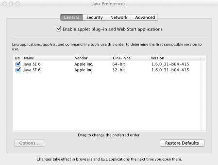
Applets de Java en versiones posteriores a la actualización 2012-006 de Apple
La actualización 2012-006 de Apple Java para OS X deshabilita por completo la ejecución de Applets de Java y aplicaciones Java WebStart en navegadores Web (con el JRE de Apple), introduciendo una incompatibilidad total con el Cliente @firma.
Puede solventar este inconveniente de dos formas alternativas:
-
Volviendo a habilitar manualmente el soporte de Applets de Java y aplicaciones Java WebStart siguiendo las instrucciones descritas en la siguiente página Web: http://support.apple.com/kb/HT5559
-
Instalando Oracle JRE 7 para Mac OS X
Es importante tener en cuenta que Oracle JRE 7 es incompatible con las versiones de 32 bits del navegador Web Google Chrome (las únicas actualmente disponibles).
Applets de Java en versiones posteriores a la actualización 2012-003 de Apple
Por defecto, tras instalar la actualización de Java 2012-003 de Apple, Mac OS X no permite la ejecución de Applets o aplicaciones Java Web Start, lo cual provoca que el Applet Cliente @firma no funcione.
Para habilitar los Applets de Java y las aplicaciones Web Start en Mac OS X es necesario indicarlo desde el panel de “Preferencias de Java” dentro de las Preferencias generales de Mac OS X y marcar la casilla “Activar módulo de Applet y aplicaciones Web Start”.
<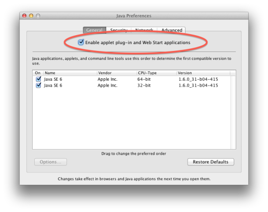
Como medida de seguridad, si el usuario no ejecuta Applets de Java por un periodo de tiempo prolongado, Mac OS X deshabilita automáticamente la ejecución de Applets y aplicaciones Java Web Start, por lo que será necesario comprobar que esta ejecución está permitida antes de iniciar el Applet Cliente @firma, independientemente de si esta ejecución ya fue habilitada anteriormente.
Applets de Java en Mac OS X Mountain Lion (10.8.x)
Mac OS X Mountain Lion introduce, como medida de seguridad una restricción a la ejecución de aplicaciones descargadas a través de Internet, como son los Applets de Java.
Por defecto, Mac OS X no permite esta ejecución a menos las aplicaciones se hayan descargado a través de la Apple Mac App Store (o eventualmente que el desarrollador que firma la aplicación esté autorizado por la propia Apple). Para permitir la ejecución del Applet @firma descargado desde una página Web normal, es necesario indicarlo mediante la opción de Seguridad y Privacidad (dentro de Preferencias) de Mac OS X marcando la opción “Permitir aplicaciones descargadas de: Cualquier sitio”.
<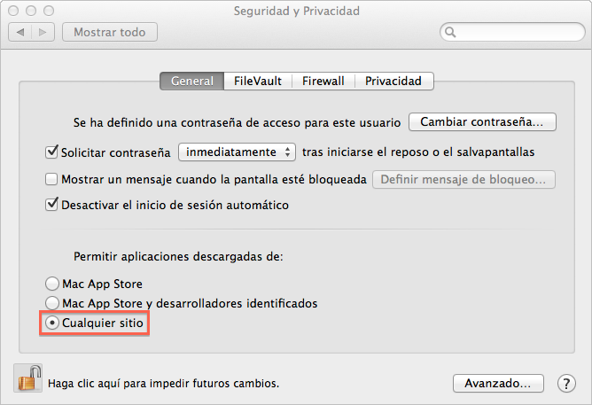
Información adicional
-
http://www.oracle.com/technetwork/java/javase/config-417990.html
-
http://www.oracle.com/technetwork/java/javase/system-configurations-135212.html
-
http://www.oracle.com/technetwork/java/javase/6u10-142936.html
-
http://www.oracle.com/technetwork/java/javase/6u12-137788.html
-
http://www.oracle.com/technetwork/java/javase/6u18-142093.html
-
http://www.oracle.com/technetwork/java/javase/6u21-156341.html
-
http://www.oracle.com/technetwork/java/javase/6u25releasenotes-356444.html
-
http://www.oracle.com/technetwork/java/javase/6u29-relnotes-507960.html
-
http://www.oracle.com/technetwork/java/javase/certconfig-2095354.html
Componentes del Cliente
El cliente se compone de:
-
Applet cliente. Este es núcleo de la aplicación. Se encuentran en forma de fichero .jar.
-
Bibliotecas JavaScript: Contienen funciones para la automatización de los procesos de firma. Son opcionales y se puede operar sin ellas, pero facilitan los procesos más comunes.
- El conjunto principal de bibliotecas JavaScript no están diseñadas para ser modificadas directamente por el integrador excepto en caso de necesidades muy específicas. No obstante, existe una biblioteca JavaScript llamada constantes.js que sí contiene parámetros modificables que permiten una mayor personalización del comportamiento del cliente.
Despliegue del Cliente
Ficheros para el despliegue del Cliente
El listado completo de archivos que cubren todas las construcciones soportadas por el cliente son:
-
applet_afirma_3_4.jar
- Núcleo del Cliente @firma. Este fichero se distribuye firmado y configurado a través del MANIFEST.MF que contiene para ser ejecutado desde cualquier origen. Sin embargo, por seguridad y para evitar que aparezcan ventanas innecesarias de advertencia al usuario, el integrador debería eliminar esta firma, configurarlo para la ejecución expresamente en los dominios en los que se vaya a desplega y firmarlo con un certificado de firma de código reconocido por Oracle Java.
-
constantes.js
- Fichero de variables JavaScript para la instalación y carga del Cliente @firma. Puede ser modificado por el integrador.
-
common-js\.js
- Ficheros JavaScript del Cliente @firma. No deben ser modificador por el integrador.
No debe eliminarse ninguno de estos ficheros de la carpeta del servidor Web. Únicamente el fichero constantes.js puede ser modificado por el integrador para personalizar el despliegue.
Despliegue del Cliente
Para el despliegue del cliente en un entorno Web, por defecto, deben situarse todos los ficheros proporcionados, respetando la estructura de directorios, en la misma carpeta que la página Web desde la que se realizará su carga.
En ciertas ocasiones, puede convenir que los archivos del Cliente residan en una ruta distinta al de la página web que lo despliega. Para estos casos, deben situarse los archivos donde se deseen y configurar la ruta mediante la constante JavaScript “base” del fichero constantes.js.
La ruta establecida mediante la constante “base” podrá ser absoluta o relativa. Siempre usará la barra separadora “/” (nunca “\) y no terminará con este carácter.
Rutas de ejemplo:
-
Absolutas: “file:///C:/ficheros”,”http://www.minhap.es/ficheros”, “https://ficheros”…
-
Relativas: “ficheros”, “afirma/ficheros”, “/ficheros”…
En caso de que el Cliente se cargue desde una Web creada al vuelo (no existe como un fichero en el servidor) será obligatorio establecer la variable “base” para indicar dónde se encuentran los distintos componentes del Cliente.
Despliegue en entornos de Web dinámica, servidores de aplicaciones y en general servidores no estáticos
El Applet Cliente @firma necesita que todos sus recursos (JAR de Java, ficheros JavaScript y página HTML de despliegue) se encuentren en el mismo directorio (misma ruta Web). Cuando se despliega este en servidores Web no estáticos (como un servidor de Portlets, un servidor de páginas activas de Microsoft, etc.), es responsabilidad del integrador hacer que los recursos puedan ser referenciados tal y como si estuviesen en un servidor estático o bien modificar tanto HTML como JavaScript para introducir referencias absolutas donde pudiese ser necesario.
Como norma general, no se proporciona soporte técnico para problemas de despliegue en entornos Web con servidores no estáticos, como pueden ser:
-
Servidores de aplicaciones usando páginas dinámicas (JSP, JSF, ASP, etc.).
-
Mapeos virtuales de los directorios que puedan afectar a los recursos del Applet Cliemte @firma.
-
Servidores de Portlets.
-
Etc.
Uso del Cliente de Firma como Applet de Java
Carga del Cliente
Para la carga del Cliente desde una página Web será necesario importar en esta, al menos, las bibliotecas “constantes.js” y “instalador.js” que acompañan al Cliente. Para importarlas, se puede utilizar su ruta relativa desde la página Web que las carga o la ruta absoluta de los ficheros.
El proceso de carga se inicia al invocar la función JavaScript “cargarAppletFirma()” incluida en el fichero “instalador.js”.
El cliente de firma queda cargado en memoria y puede accederse a las funcionalidades que implementa por medio de la variable JavaScript “clienteFirma”, localizada en el fichero “constantes.js”.
La carga del cliente en una página puede realizarse con sólo introducir una sentencia JavaScript en el propio cuerpo de la página que se encargue de invocar al método de carga.
Por ejemplo:
<html>
<head>
<script type="text/javascript" language="javascript" src="constantes.js"></script>
<script type="text/javascript" language="javascript" src="common-js/instalador.js"></script>
[…]
</head>
<body>
<script type="text/javascript">
cargarAppletFirma();
</script>
[…]
</body>
</html>
Tratamiento de errores
Es posible tratar todos los errores que se hayan producido durante la operación del cliente mediante JavaScript. El cliente siempre almacena si la última operación criptográfica que realizó finalizó correctamente o no. Es posible consultar este resultado mediante el método del cliente isError(). En caso de producirse un error además, se podrá obtener la descripción del mismo mediante el método getErrorMessage(). De esta forma pueden elaborarse mecanismos JavaScript capaces de detectar y mostrar los errores pertinentes al usuario.
Un ejemplo que ilustra este sistema de tratamiento de errores es:
var fichero= document.getElementById("fichero");
clienteFirma.initialize();
clienteFirma.setFileuri(fichero.value);
firmar();
if(!clienteFirma.isError()) {
var firmaB64 = document.getElementById("firmaB64");
firmaB64.value = clienteFirma.getSignatureBase64Encoded();
return true; // Enviar
}
else {
alert("No se ha podido firmar: " + clienteFirma.getErrorMessage());
return false;
}
También es posible dejar la tarea de notificación de los errores directamente al cliente. En caso de hacerlo, el cliente mostrará un mensaje de error mediante un dialogo Java por cada error de operación detectado, salvo en multifirmas masivas en donde estas notificaciones harían inviable un uso eficiente del cliente. En cambio, en las operaciones de multifirma masiva se generan trazas de log.
Para activar este mecanismo de notificación de errores es necesario configurar a true la constante showErrors del fichero JavaScript “constantes.js” y establecerla antes de cada operación mediante la función initialize() de “firma.js”. Por defecto, esta opción está configurada a false.
Firma electrónica
El proceso de firma electrónica permite, por defecto, la firma de cualquier tipo de datos, independientemente de su formato. En concreto, los datos de entrada pueden ser.
Se permiten diferentes tipos de datos a firmar (solo se puede firmar un tipo cada vez):
-
un fichero: se establece qué fichero firmar mediante el método setFileuri, que recibe como parámetro de entrada una cadena con la ruta al fichero a firmar. Este método no comprueba en ningún momento la existencia de un fichero en la ruta indicada. Si el fichero no existiese se produciría un error durante la operación en cuestión.
-
datos: se establecen mediante el método setData, que recibe una cadena con los datos codificados en base 64.
-
un hash: se establece mediante el método setHash, que recibe una cadena con el hash codificado en base 64.
-
Si no se invoca ninguno de estos métodos, el Cliente solicitará al usuario un fichero para firmar
En las firmas XML (XAdES y XMLsSig), en el caso de que los datos insertados estén en base 64 (ya sea mediante el setFileuri y un fichero de texto que contenga el base 64 de los datos o a través del setData y una cadena doblemente codificada en base 64), no se realizará la codificación interna en base 64 que requiere la firma XML para ficheros binarios. Así obtenemos que se firma la codificación base 64 de los datos y no una doble codificación en base 64 de estos. Este mismo comportamiento lo podemos obtener mediante el método setFileuriBase64 que establece como datos de entrada para las firmas electrónicas el contenido descodificado de un fichero en base 64.
Mientras que indicar con setFileuri un fichero con datos codificados en base 64 sólo aplica a las firmas XAdES y XMLdSig, el método setFileuriBase64 funciona con todos los formatos de firma. Esto permite indicar los datos a firmar a través de un fichero que los contiene en base 64.
Previamente a la realización de la firma, es aconsejable la inicialización del cliente y su configuración con los parámetros preestablecidos. Esto podemos realizarlo con las funciones JavaScript initialize() y configuraFirmar(), que configura los siguientes parámetros según las variables indicadas del fichero constantes.js”:
-
Algoritmo de firma: Determinado por la variable signatureAlgorithm. Por defecto, SHA1withRSA.
-
Formato de firma: Determinado por la variable signatureFormat. Por defecto, CMS.
-
Filtro de certificados: Determinado por la variable certFilter. Por defecto, ninguno.
El método del applet que se ha de invocar para firmar es sign(), aunque también se puede llamar a la función JavaScript firmar() (en firma.js) que, como en los casos anteriores, espera si es necesario a que el cliente esté cargado y actualiza el entorno operativo si es necesario.
Por ejemplo:
<script type="text/javascript" language="javascript">
function enviar() {
var fichero= document.getElementById("fichero");
initialize();
configurarFirma();
clienteFirma.setFileuri(fichero.value);
firmar();
if(!clienteFirma.isError()) {
var firmaB64 = document.getElementById("firmaB64");
firmaB64.value = clienteFirma.getSignatureBase64Encoded();
return true; // Enviar
}
else {
alert("No se ha podido firmar: "+clienteFirma.getErrorMessage());
return false;
}
}
</script>
[…]
<form id="formulario" action="/enviarFirma">
<input type="hidden" id="firmaB64"><br>
Fichero a firmar: <input type="file" id="fichero">
<input type="submit" onclick="return enviar();">
</form>
Pueden ejecutarse operaciones de firma, así como de cofirma y contrafirma desde el HTML de prueba demoMultifirma.html.
<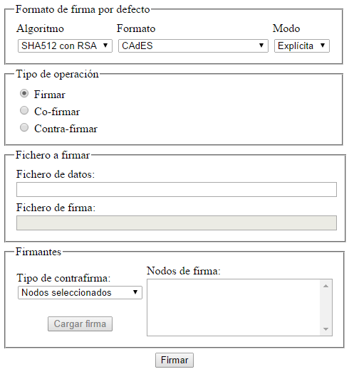
- Figura 1: HTML de prueba demoMultifirma.html
Cofirma (co-sign)
La cofirma permite a varios usuarios firmar un mismo documento.
Una cofirma siempre firma los datos que se le indican, nunca se aplica ni depende de otra de las firmas del documento.
El caso de la cofirma es igual al de la firma simple, pero además de los datos hay que pasar al Cliente la firma electrónica de los demás firmantes. Esto se puede hacer de diferentes maneras:
-
Mediante un fichero que contenga la firma electrónica, con el método setElectronicSignatureFile(), que recibe como parámetro una cadena con la ruta al fichero.
-
Introduciendo directamente la firma, con el método setElectronicSignature() que recibe como parámetro una cadena con la firma en base 64.
-
Si no se especifica, se pedirá al usuario que seleccione el fichero de firma.
Una vez especificados los parámetros necesarios, se invoca al método coSign(). La salida es análoga a la de la operación de firma.
Pueden ejecutarse operaciones de cofirma, así como de firma y contrafirma desde el HTML de prueba “demoMultifirma.html”.
Contrafirma (counter-sign)
La contrafirma permite a un usuario firmar las firmas de otros usuarios.
El caso de la contrafirma es similar a los anteriores, pero sólo es necesario indicar la firma que deseamos contrafirma (no son necesarios los datos) y, según la operación concreta, puede ser necesario conocer la estructura de firmantes que contiene.
Para conocer la estructura de firmantes de una firma el Cliente dispone del método getSignersStructure(). Este método devuelve una cadena que contiene los nombres de los firmantes separados por un retorno de carro (“\n” en JavaScript). Al comienzo del nombre hay tantos tabulados (“\t”) como nivel ocupe el firmante en el documento. Por ejemplo, si A y B co-firman un documento y C contra-firma la firma de A, entonces la cadena devuelta sería “A\n\tC\nB”.
La firma que deseamos contrafirmar se especifica mediante el método setElectronicSignature() o setElectronicSignatureFile(), que reciben la firma en base 64 y la ruta del fichero de firma, respectivamente.
En el fichero demoMultifirma.html se puede ver un ejemplo de cómo tratar esta cadena.
Se puede especificar qué firmas se desean firmar de diferentes maneras:
-
Todas las firmas hojas (firmas no contra-firmadas): invocando el método counterSignLeafs().
-
Todas las firmas: invocando el método counterSignTree().
-
Todas las firmas de un firmante: configurando los firmantes con el método setSignersToCounterSign() que recibe como parámetro una cadena con los nombres de los firmantes separados por “\n” e invocando el método counterSignSigners().
-
Firmas concretas: con el método setSignersToCounterSign() indicamos que firmas deseamos contrafirmar a partir de su posición (partiendo de 0) según el orden de aparición en la estructura devuelta por getSignersStructure(). Las posiciones se indican con números separados por “\n”. Por ejemplo, “0\n3\n4” indica que se contrafirmen las firmas de las posiciones 0, 3 y 4. Se invoca con el método counterSignSigners().
La salida es análoga a la de la firma digital.
Téngase en cuenta que las contrafirmas siempre aplican a una firma y se colocan bajo esta en el árbol de firmas, al contrario que las cofirmas, que siempre se colocan como un nodo dependiente de los datos.
Pueden ejecutarse operaciones de contrafirma, así como de firma y cofirma desde el HTML de prueba “demoMultifirma.html”.
NOTA IMPORTANTE: Dado que las contrafirmas se aplican sobre las firmas previas y no sobre los propios datos, no es posible (no es conceptualmente correcto) realizar contrafirmas multi-fase, es decir, las huellas digitales se calculan al vuelo siempre (no se admiten huellas digitales pre-generadas externamente), ya que estas se generan en base a las firmas, no a los datos.
Firma y Multifirma Masiva
Consideraciones previas
Un aspecto importante que debe tenerse en cuenta en todas las operaciones de firma y multifirma masiva es que los procesos no son interactivos a nivel de operación individual, es decir, que no se requiere intervención del usuario y este no recibe información ni notificaciones hasta que finaliza el proceso completo, tanto si han ocurrido errores durante su desarrollo como si transcurrió sin incidencias.
Este modo de operar permite que, por ejemplo al iniciar un proceso de 2.000 firmas, el usuario pueda despreocuparse hasta su finalización, y que este no se detendrá en una firma aunque ocurriese un error (sea cual sea este). Siguiendo el ejemplo, si el usuario iniciase la firma de los 2.000 ficheros y desatendiese el proceso pensando que este tardará una o dos horas, el proceso no se habrá detenido porque el fichero número 3 estuviese corrupto, sino que se firmarían los 1.999 restantes y en el informe final de operación se marcarán las incidencias ocurridas.
Una excepción a esta regla es el uso de dispositivos de firma que requieren la introducción de un PIN / contraseña o una confirmación para cada una de las operaciones de firma (como el DNIe). Aunque los mensajes y diálogos de aplicación se pospondrán a la finalización total de las tareas, esta confirmación o introducción de PIN no puede ser omitida, por lo que el usuario debe realizarla por cada operación individual.
Consulte el punto “Tratamiento de errores” para más información sobre cómo se muestran los errores en los procesos de firma y multifirma masiva.
Firma/multifirma de directorios
Este proceso permite establecer un directorio y firmar/multifirmar todos los ficheros que contiene en una única operación, obteniendo la firma individual de cada uno de ellos.
El tipo de operación a realizar se especificará mediante setMassiveOperation, lo que nos permitirá realizar una firma masiva simple (FIRMAR), cofirmar (COFIRMAR) o contrafirmar todas las firmas al completo que encontremos (CONTRAFIRMAR_ARBOL) o tan sólo las firmas hoja (CONTRAFIRMAR_HOJAS). La operación se ejecutará mediante el método signDirectory del cliente y, en caso de no haber especificado ningún directorio, se mostrará la pantalla para su selección.
Los ficheros que se firmaran durante la operación pueden ser filtrados por extensión. Para esto se usará el método setInIncludeExtensions que recibe las extensiones de los ficheros que se deben procesar separadas por comas (“,”).
Por ejemplo:
clienteFirma.setInIncludeExtensions(“txt,xml,p7s”);
También es posible indicar que se desean procesar los ficheros de los subdirectorios de la ruta indicada. Esto se configura mediante el método setInRecursiveDirectorySign.
En el caso de las operaciones de multifirma es muy recomendable utilizar el mismo formato de firma del que ya dispusiese la firma original. Para indicar que se desea respetar este formato debe usarse el método setOriginalFormat. En caso de tratarse de una operación de firma masiva o no desear respetar el formato original del fichero de firma, se realizará una operación de firma conforme la configuración establecida mediante el mecanismo tradicional.
Según el tipo de operación masiva que se haya solicitado y el tipo de fichero que se encuentre durante la misma se realizará una u otra acción:
-
Firma:
-
Fichero binario: Se firmará con la configuración de firma establecida.
-
Fichero de firma: Se firmará con la configuración de firma establecida.
-
-
Cofirma:
-
Fichero binario: Se firmará con la configuración de firma establecida.
-
Fichero de firma: Se extraerán, siempre que sea posible, los datos implícitos de la firma y se cofirmará el fichero.
-
-
Contrafirma:
-
Fichero binario: Se ignorará.
-
Fichero de firma: Se contrafirmará completamente o sólo las firmas hoja según tipo de operación (CONTRAFIRMAR_ARBOL o CONTRAFIRMAR_HOJAS).
-
En cada caso, se entenderá como fichero de firma todo aquel que sea una firma en el formato configurado, o en cualquier formato si se ha solicitado mantener el formato original. El resto de ficheros son considerados ficheros binarios.
Los documentos PDF, ODF y OOXML serán considerados a efectos de firmas PAdES/PDF, ODF y OOXML, respectivamente, como documentos de firma, independientemente de que estos estén firmados o no. Esto es así porque para estos formatos cada firma es independiente del resto y hacer una firma o cofirma al documento se interpreta como agregarle una nueva firma.
Las firmas resultado de esta operación se almacenarán en el directorio establecido con el método setOutputDirectoryToSign. El método creará los ficheros de firma con el mismo nombre que el fichero original (extensión incluida) y la extensión apropiada según el formato de la firma. En el caso de la cofirma y contrafirma se insertarán las partículas “.cosign” y “.countersign”, respectivamente, antes de la extensión de firma. Si se ejecuta una operación de cofirma, pero el fichero es considerado un binario, se generará una firma, como ya se explicó anteriormente, y se agregará la partícula “.signed”. En caso de no indicar un directorio de salida se tomará el mismo directorio en donde se encuentren los ficheros de entrada.
En el mismo directorio de salida se creará un fichero de log (result.log) en donde se registrará el resultado de cada una de las acciones realizadas durante la operación masiva.
En caso de producirse uno o más errores durante el proceso el método signDirectory devolverá false, pero no se detendrá hasta haber finalizado la operación. Para conocer con más detalle la causa de los errores que puedan producirse será necesario consultar el fichero de log.
Un ejemplo del uso de esta funcionalidad es:
clienteFirma.initialize();
clienteFirma.setSignatureFormat("CADES");
clienteFirma.setSignatureAlgorithm("SHA1withRSA");
clienteFirma.setInputDirectoryToSign("C:/ficheros");
clienteFirma.setOutputDirectoryToSign("C:/firmas");
clienteFirma.setInIncludeExtensions("csig");
clienteFirma.setInRecursiveDirectorySign(true);
clienteFirma.setMassiveOperation("CONTRAFIRMAR_HOJAS");
clienteFirma.signDirectory();
if(!clienteFirma.isError()) {
alert("La operacion finalizo con exito");
}
else {
alert("Se detectaron errores durante el proceso de firma consulte el log de error para más información");
}
Puede verse el funcionamiento de la multifirma masiva basada en ficheros en el HTML de prueba demoFirmaDirectorios.html.
<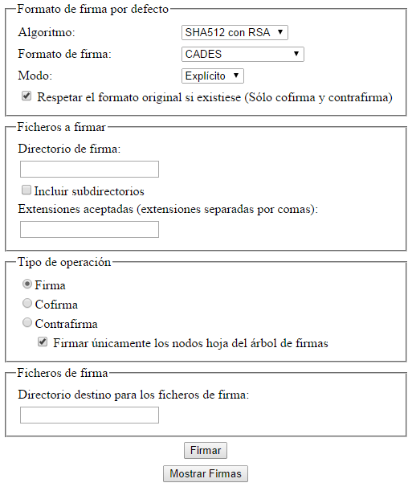
- Figura 2: HTML de prueba demoFirmaDirectorios.html
Modo de operación programática
Adicionalmente a la metodología ya comentada se dispone de un procedimiento para la firma independiente de datos, ficheros y hashes en base a una configuración única de firma.
El procedimiento a seguir para realizar esta operación es el siguiente:
-
Configuración del cliente.
-
Inicialización de la operación masiva.
-
Firma masiva de los datos.
-
Finalización de la operación.
Configuración del cliente
Los aspectos configurables del cliente que afectan a la operación masiva son:
-
Operación masiva a realizar (Firma, cofirma y contrafirma de nodos hoja o del árbol completo de firma).
-
Algoritmo de firma (SHA1withRSA, SHA512withRSA, etc.).
- Importante: No se soportan los algoritmos obsoletos MD2 y MD5.
-
Formato con el que realizar las firmas (CMS, XAdES Detached, PDF, ODF…).
-
Si se debe respetar el formato original que, en el caso de las operaciones cofirma y contrafirma, significa detectar el formato de las firmas introducidas para multifirmar con el mismo formato.
-
Modo de firma (Implícita o explícita).
-
Certificado con el que firmar.
La configuración de estos parámetros se realiza respectivamente mediante los métodos:
-
setMassiveOperation(String)
-
setSignatureAlgorithm(String)
-
setSignatureFormat(String)
-
setOriginalFormat(boolean)
-
setSignatureMode(String)
-
setSelectedCertificateAlias(String)
La mayoría de estos métodos se utilizan en la configuración de la firma simple del applet, pero otros se utilizan únicamente para la firma masiva:
-
setMassiveOperation(String), que configura el tipo de operación masiva y puede recibir los parámetros:
-
FIRMAR: Firmar datos.
-
COFIRMAR: Cofirma una firma dada. Sólo podrá cofirmar cuando los datos estén contenidos en la firma o exista una referencia a ellos. No admite que se le proporcionen datos no reconocibles como una firma.
- En el caso de proporcionarse un documento PDF, ODF u OOXML y se configure el formato PAdES, ODF u OOXML, respectivamente, se agregará una firmar al documento, independientemente de si este estaba firmado o no, ya que en estos formatos cada firmar es independiente del resto.
-
CONTRAFIRMAR_ARBOL: Contrafirmar todas las firmas de un documento de firma. No admite que se le proporcionen datos no reconocibles como una firma.
-
CONTRAFIRMAR_HOJAS: Contrafirmar todas las firmas hoja de un documento de firma. No admite que se le proporcionen datos no reconocibles como una firma.
- setOriginalFormat(boolean), que se configurará a true o false según se desee respetar o no el formato original de firma durante las operaciones de cofirma y contrafirma. Durante la operación de firma se ignora este parámetro. El comportamiento de esta opción es el siguiente:
-
Si la opción está activada: Se identificará el formato de la firma original y se multifirmará en este formato.
-
Si no está activada la opción: Se comprobará el formato de la firma y, si es compatible con el formato establecido, se cofirmará / contrafirmará en ese formato. Si no es compatible, fallará la operación:
Es decir, que si está activada esta función y, por ejemplo, indicamos que se cofirme en CAdES una firma CMS, se ignorará el formato indicado y se cofirmará en CMS (el formato original). Si fuese el caso contrario, y se solicita una cofirma CMS y la firma original es CAdES, se ignoraría el CMS y se firmaría en CAdES. Si la opción "respetar el formato original" estuviese desactivada (setOriginalFormat(false)) se multifirmaría siempre en el formato indicado, o se informaría mediante un mensaje de error que el fichero indicado no es un fichero de firma compatible si el formato indicado no lo soportase.
El mantener activa esta opción es útil cuando no se conozca el formato en el que fuesen originalmente firmados los datos o queramos evitarnos el seleccionarlo para cada elemento de firma, mientras que el desactivarlo evita que se realice el proceso de búsqueda del formato original y, que de seleccionar un formato equivocado, se nos informe.
Inicialización de la operación masiva
El proceso de inicialización configura los parámetros ya comentados en el módulo de firma masiva y reinicia el registro de mensajes (log) del módulo. Desde el momento de la inicialización y hasta que se finalice el proceso de firma masiva estos parámetros, a excepción del tipo de operación (setMassiveOperation(String)) y, cuando la operación es FIRMAR, el formato de firma (setSignatureFormat(String)), permanecen inalterados a lo largo de las operaciones realizadas por el módulo, aunque sí afectarán los cambios de configuración al resto de funcionalidades del cliente.
En caso de que no se hubiesen establecido todas las propiedades necesarias para la configuración de la firma masiva se tomarán los valores por defecto establecidos por el cliente. Estos son:
-
Operación: Firma.
-
Algoritmo: SHA1 con RSA.
-
Formato: CAdES.
-
Respetar formato original: Activado.
-
Modo: Explícito.
En el caso del alias, si no se ha establecido ninguno, se mostrará un diálogo para permitir seleccionar el certificado de firma al inicializar el proceso de firma masiva.
La inicialización del proceso de firma masiva se realiza mediante el método initMassiveSignature().
Firma masiva de los datos
Existen 3 métodos para firmar, cofirmar o contrafirmar (nodos u hojas), según sea la operación configurada para el proceso:
-
massiveSignatureData(String)
-
massiveSignatureFile(String)
-
massiveSignatureHash(String)
El método massiveSignatureData(String) realiza la operación configurada sobre los datos que recibe en forma de cadena de texto en base 64; massiveSignatureFile(String) ejecuta la operación sobre el fichero cuya ruta recibe cómo parámetro y massiveSignatureHash(String) lo hace sobre un hash en base 64.
A diferencia de cualquier otro método del Applet que lea o almacene datos en disco, el método no pedirá confirmación al usuario para acceder al fichero. El usuario habrá dado su consentimiento para hacer esto al inicio del proceso de firma masiva.
En caso de utilizarse el método massiveSignatureFile(String), se solicitará confirmación al usuario para acceder a este fichero de su sistema y cualquier otro dentro del proceso de firma masiva. En caso de aceptarse, no se volverá a mostrar este mensaje salvo que se finalice el proceso masivo (endMassiveSignature()) y se inicie uno nuevo.
<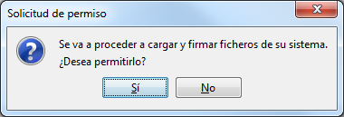
-
Figura 3: Confirmación de acceso a ficheros en el proceso de firma masiva
A diferencia de la mayoría de parámetros de la configuración de la firma masiva, es posible modificar el tipo de operación que se desea en cualquier momento durante su desarrollo. Para esto sólo es necesario utilizar el método setMassiveSignatureOperation(String) en el momento en el que se desee modificar la configuración.
En el caso de realizarse una firma masiva (ni cofirmas, ni contrafirmas) es posible modificar a mitad del proceso el formato con el que queremos firmar. Esto se realizará mediante el método setSignatureFormat(String), que permitirá generar firmas en el nuevo formato, pero no afectará al formato inicialmente configurado (el establecido antes del initMassiveSignature()). Si durante la operación de firma masiva establecemos el formato a null, se establecerá el formato inicialmente configurado. El formato de las cofirmas y contrafirmas masivas no se puede modificar durante la ejecución, pero puede configurarse que se respete el formato original para que se opere siempre en el formato adecuado.
El comportamiento de cada una de las operaciones simples podrá variar según el tipo de fichero que se les proporcione:
-
Firma:
-
Fichero binario: Se firmará con la configuración de firma establecida.
-
Fichero de firma: Se firmará con la configuración de firma establecida.
-
-
Cofirma:
-
Fichero binario: Fallará la operación.
-
Fichero de firma: Se extraerán, siempre que sea posible, los datos implícitos de la firma y se agregará una nueva firma al fichero.
-
-
Contrafirma:
-
Fichero binario: Fallará la operación.
-
Fichero de firma: Se contrafirmará completamente o sólo las firmas hoja según tipo de operación (CONTRAFIRMAR_ARBOL o CONTRAFIRMAR_HOJAS).
IMPORTANTE: Téngase en cuenta las siguientes consideraciones:
-
-
Las operaciones de cofirma y contrafirma no pueden realizarse sobre hashes ya que desde estos no pueden obtenerse los datos originales.
-
Determinados formatos de firma pueden exigir que sea necesario firmar sobre los datos o un fichero, no siendo posible firmar hashes. Por ejemplo, los formatos XML enveloped, ODF y PDF.
-
La operación de firma recibe los datos (mediante cualquiera de los 3 métodos comentados) mientras que la cofirma y las contrafirmas reciben una firma previamente generada con formato reconocido.
-
La contrafirma se aplica sobre firmas y es indiferente que estas almacenen datos implícitos o no, pero la cofirma requiere los datos originales para ser firmados por lo que es obligatorio que se proporcione una firma con los datos implícitos o, al menos, una explícita realizada con el mismo algoritmo de firma con el que se solicita la cofirma, para así poder reutilizar el hash que almacena.
-
En el caso de firmas con formato propio del tipo de documento (PDF, ODF y OOXML) la operación de cofirma supondrá agregar una nueva firma al documento.
Las operaciones masivas devuelven su resultado en forma de cadena en base 64. En caso de producirse algún error se devolverá null y en ningún caso se lanzará una excepción, permitiendo al integrador obviar la captura de éstas, o se interrumpirá el proceso.
Cada operación individual de la firma masiva realizada generará una entrada en el registro de mensajes (log). En el caso de finalizar la operación correctamente esta simplemente lo indicará, mientras que en el caso de error la entrada explicará el error producido.
Finalización de la operación
La finalización de la operación elimina la configuración de operación masiva establecida por lo que ya no es posible continuar operando hasta que se vuelva a inicializar. Tras ser finalizada la operación, la nueva inicialización podría tomar una nueva configuración de firma establecida.
El método para llevar a cabo la finalización de la operación masiva es endMassiveSignature().
El finalizar la operación no elimina los mensajes de registro (log) generados durante la misma, por lo que es posible seguir accediendo a ellos. Sí, en cambio, los eliminará el iniciar una nueva operación de firma masiva.
Registro de mensajes de la operación masiva
Por cada operación individual de firma/multifirma realizada durante el proceso masivo se genera una entrada en el registro de mensajes. Para obtener, tras una operación individual, el mensaje generado se debe utilizar el método getMassiveSignatureCurrentLog(). La forma de este registro será:
-
Operación sobre TIPO_DATO: MENSAJE.
En donde TIPO_DATO será la palabra “datos”, “fichero” o “hash” según el método utilizado para la operación (massiveSignatureData, massiveSignatureFile o massiveSignatureHash respectivamente); y MENSAJE será el mensaje obtenido, “Correcta” en el caso de que la operación finalizase correctamente o la explicación del error en caso de que se produjese.
Puede obtenerse todo el log generado hasta el momento para su proceso mediante el método getMassiveSignatureLog(). El texto que devuelve este método se compone de todas las entradas del mismo con el formato indicado separadas por un retorno de carro (“\r\n”).
Puede almacenarse este mismo log en disco mediante la función saveMassiveSignatureLog(), que lo almacenará en la ruta indicada con el método setOutFilePath(String). Si no se ha establecido ningún fichero de salida se mostrará un diálogo de guardado para seleccionar en donde se desea almacenar el fichero.
El registro de mensajes permanecerá aun cuando se finalice la operación masiva, pero se reiniciará en cada nueva inicialización del proceso.
Guardado de firmas en disco
Este mecanismo no está optimizado para el guardado de firmas en disco. Si su objetivo es almacenar las firmas resultantes en el sistema del usuario, consulte el apartado “9.1 Guardar la firma en un fichero” y evalúe si es preferible su uso.
Si requiere almacenar las firmas en disco y utilizar el mecanismo de firma masiva programática, dese cuenta de que se requerirá al usuario confirmación para el guardado de cada una de las firmas.
Las firmas resultantes de la operación de firma masiva se devuelven en base 64 por cada operación de firma individual (realizadas con massiveSignatureData(String), massiveSignatureFile(String) o massiveSignatureHash(String)), por lo cual el cliente no las almacena internamente como hace con las operaciones de firma simple. Por este motivo, el simple uso del método de guardado de firma del cliente no aplica a esta situación. Si desea guardar los datos en disco tenga en cuenta que esto requiere confirmación explícita del usuario, por lo que deberá aprobar cada guardado individual de datos.
En su lugar se puede utilizar la siguiente sucesión de llamadas a métodos:
-
setElectronicSignature(String): Recibe como parámetro la firma en base64 y la guarda internamente.
-
setOutFilePath(String): Establece el fichero de salida. Para permitir al usuario que seleccione el nombre y directorio de salida para cada fichero firmado, se le pasará el parámetro null.
-
saveSignToFile(): Pide confirmación al usuario y almacena la firma en el directorio de salida indicado.
Ejemplo Java de operación masiva
// Creamos una instancia del applet (innecesario para su uso en Web)
SignApplet clienteFirma = new SignApplet();
// Configuramos la operación que deseamos
clienteFirma.setMassiveOperation("FIRMAR");
clienteFirma.setSignatureFormat("CMS");
clienteFirma.setSignatureMode("IMPLICIT");
// Inicializamos la operación (en este momento se nos pedirá seleccionar un
// certificado de firma)
clienteFirma.initMassiveSignature();
// Una vez inicializada la operación, cualquier cambio en el algoritmo, formato,
// tipo de operación, etc. no será tenido en cuenta para la operación masiva,
// aunque sí para el resto de operaciones del cliente
// Vector en el que almacenar los resultados en base 64
Vector<String> firmasB64 = new Vector<String>();
// Firmamos y almacenamos los datos. Por norma general es recomendable operar
// directamente con las firmas generadas (guardarlas, enviarlas,…) y no
// mantenerlas todas cargadas para evitar problemas de desbordamiento de
// memoria
// Firma de ficheros
firmasB64.add( clienteFirma.massiveSignatureFile("C:\Fichero.txt") );
firmasB64.add( clienteFirma.massiveSignatureFile("C:\Fichero.xml") );
firmasB64.add( clienteFirma.massiveSignatureFile("C:\Fichero.odt") );
// Firma de datos
firmasB64.add( clienteFirma.massiveSignatureData(
clienteFirma.getFileBase64Encoded("C:\Fichero.txt", true)
));
firmasB64.add( clienteFirma.massiveSignatureData(
clienteFirma.getFileBase64Encoded("C:\Fichero.xml", true)
));
firmasB64.add( clienteFirma.massiveSignatureData(
clienteFirma.getFileBase64Encoded("C:\Fichero.odt", true)
));
// Firma de hashes
clienteFirma.setFileuri("C:\Fichero.txt");
firmasB64.add( clienteFirma.massiveSignatureHash(
clienteFirma.getFileHashBase64Encoded(true)
));
clienteFirma.setFileuri("C:\Fichero.xml");
firmasB64.add( clienteFirma.massiveSignatureHash(
clienteFirma.getFileHashBase64Encoded(true)
));
clienteFirma.setFileuri("C:\Fichero.odt");
firmasB64.add( clienteFirma.massiveSignatureHash(
clienteFirma.getFileHashBase64Encoded(true)
));
// Finalizamos la operación
clienteFirma.endMassiveSignature();
// Almacenamos el log preguntando al usuario donde lo desea almacenar
clienteFirma.saveMassiveSignatureLog();
// Además de almacenarlas en un vector queremos guardarlas en disco (en este caso no mantenemos referencias a los ficheros originales)
for(int i=0; i<firmasB64.size(); i++) {
if(firmasB64.get(i) != null) {
clienteFirma.setElectronicSignature(firmasB64.get(i));
clienteFirma.setOutFilePath("firma"+i+".csig");
clienteFirma.saveSignToFile();
}
}
// Mostramos un mensaje de error al usuario por cada error obtenido
String[] mensajes = clienteFirma.getMassiveSignatureLog().trim().split("\r\n");
for(int i=0; i<firmasB64.size(); i++) {
if(firmasB64.get(i) == null) {
JOptionPane.showMessageDialog(
clienteFirma, mensajes[i], "Error", JOptionPane.ERROR_MESSAGE
);
}
}
Puede verse el funcionamiento de la multifirma masiva basada en ficheros en el HTML de prueba demoFirmaDirectorios.html.
<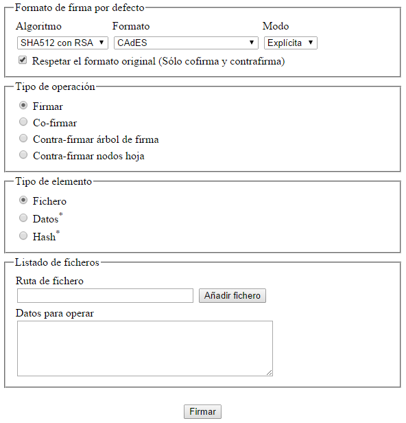
- Figura 4: HTML de prueba demoMultifirmaMasiva.html
Cifrado de datos
El Cliente @firma incorpora funcionalidades de cifrado simétrico de datos que permite encriptar datos o ficheros de tal forma que sólo aquella persona que tenga la clave o contraseña utilizada para el cifrado puede recuperar esos datos.
Antes de proceder al cifrado de datos con el Cliente, conviene reinicializar su configuración debido a que esta funcionalidad comparte recursos con los procesos de firma y podría haber incompatibilidad en la entrada de datos. Para esta tarea puede utilizarse el método “initialize()” de la biblioteca JavaScript llamada “cripto.js” que reinicia las propiedades del cliente a sus valores por defecto.
Para iniciar el proceso de cifrado habrá que introducir previamente los datos a cifrar. Es posible especificar los datos a cifrar de diferentes formas:
-
datos: se especifica cuál es la cadena a cifrar mediante el método setPlainData, que recibe la cadena que se desea cifrar en Base64.
-
fichero: es posible especificar que se cifre un fichero indicándole la ruta a la llamada del proceso de firma. Para ello, utilizaremos directamente el método de cifrado cipherFile.
Por defecto el cliente de cifrado define como algoritmo de cifrado AES y generación automática de clave, aunque posteriormente veremos las posibilidades de configuración de estos parámetros. Tras indicar la configuración del cifrador, podemos ejecutar la operación de cifrado. Para cifrar los datos establecidos mediante setPlainData, utilizaremos el método cipherData. Para cifrar un fichero, usaremos el método cipherFile, que recibe la ruta de un fichero en disco. También podemos utilizar las funciones JavaScript (en cripto.js), cifrarDatos y cifrarFichero, que reciben los datos en Base64 y la ruta del fichero, respectivamente. El comportamiento de la llamada es análogo al resto de llamadas al Applet, indicando si la ejecución se ha llevado a cabo de forma correcta o los errores en caso negativo.
Los datos cifrados se podrán obtener una vez haya finalizado mediante la llamada al método getCipherData o la función JavaScript obtenerResultadoCifrado, que devuelven los datos cifrados codificados en formato Base 64. Es posible almacenar estos datos cifrados en un archivo mediante la función saveCipherDataToFile, a la cual le pasaremos la ruta absoluta del archivo destino (atención, el archivo destino será sobrescrito para evitar problemas a la hora de descifrar).
El fichero destino se creará si no existía, pero la ruta de directorios del fichero deberá existir o la operación fallará.
El contenido del archivo destino son los datos cifrados, por lo que no se recomienda su edición, ya que pudiera alterar gravemente el contenido plano del mensaje cifrado o incluso destruirlo.
Un ejemplo de aplicación de lo anterior para un proceso completo de cifrado sería el siguiente:
<html>
<head>
<script type="text/javascript" language="javascript" src="constantes.js"></script>
<script type="text/javascript" language="javascript" src="common-js/instalador.js"></script>
<script type="text/javascript" language="javascript" src="common-js/cripto.js"></script>
<script type="text/javascript" language="javascript">
function cifrar()
{
var texto= document.getElementById("campo1").value;
clienteFirma.initialize();
clienteFirma.setKeyMode(“GENERATEKEY”);
clienteFirma.setCipherAlgorithm(“AES”);
clienteFirma.setPlainData(clienteFirma.getBase64FromText(texto, null), null);
clienteFirma.setShowErrors(false);
cifrarDatos();
if(!clienteFirma.isError()){
var datosCifrados = clienteFirma.getCipherData();
var campoCifrado =document.getElementById(“campo2”);
campoCifrado.value = datosCifrados;
return true;
}else{
alert("No se ha podido cifrar los datos: "+clienteFirma.getErrorMessage());
return false;
}
}
</script>
[…]
</head>
<body>
<script type="text/javascript">
cargarAppletFirma();
</script>
[…]
<label>Datos planos</label><br/>
<textarea id=”campo1” cols=”20” rows=”5” nowrap>Introduzca texto plano aquí</textarea>
<br/><br/><input type=”button” value=”Cifrar” onClick=”cifrar();”/><br/><br/>
<label>Datos cifrados</label><br/>
<textarea id=”campo2” cols=”20” rows=”5” nowrap readonly></textarea>
[…]
</body>
</html>
Este ejemplo básico captura el texto introducido en un área de texto, la cifra con generación automática de clave y el algoritmo AES y la muestra en un segundo área de texto tras pulsar un botón. Para más información, consultar el ejemplo incluido y el apartado Configuración de cifrado para conocer las opciones de configuración de esta operación.
Puede verse las distintas configuraciones de cifrado y descifrado de datos en el HTML de ejemplo demoCifrado.html.
<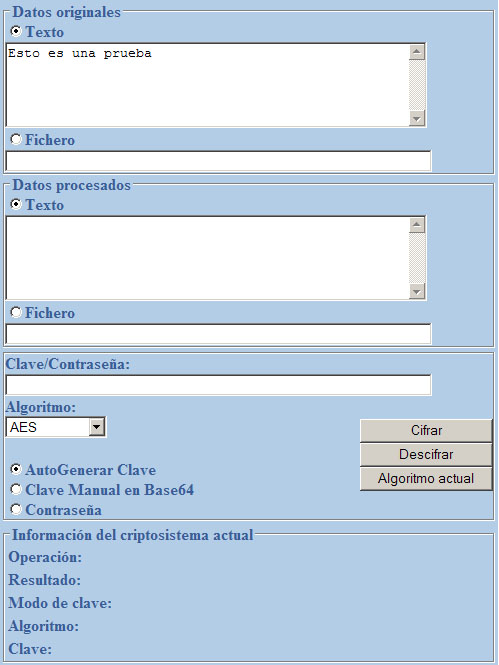
-
Figura 10: HTML de ejemplo demoCifrado.html
Puede encontrar información adicional sobre el cifrado de datos en el punto Algoritmos de cifrado de este mismo documento.
Descifrado de datos
De manera similar al cifrado, deberemos especificar cuáles son los datos a descifrar, y al igual que antes podremos especificar los datos cifrados mediante dos métodos distintos:
-
datos o texto cifrado: se especifica cuál es la cadena a descifrar mediante el método setCipherData. Los datos de entrada estarán en base 64 (igual que la salida del algoritmo de cifrado) para evitar la aparición de caracteres extraños o no imprimibles. Internamente estos datos se decodificaran a la base apropiada y se descifrarán.
-
fichero: también es posible especificar que los datos a cifrar provienen de un archivo indicándole la ruta (decipherFile), o usando la función setFileuri para especificarla. También aquí se deberá especificar la ruta absoluta del fichero.
Evidentemente para descifrar datos no podremos auto generar una clave, sino que tendremos que especificarle una siempre. En caso que se intente iniciar el método de descifrado sin especificar la clave supondrá un fallo automático. Los datos descifrados se pueden recuperar mediante la llamada a la función getPlainData.
También tenemos un método para escribir estos datos recuperados a un archivo mediante la llamada a savePlainDataToFile y pasándole la ruta absoluta del archivo destino. El fichero destino se creará si no existía, pero la ruta de directorios del fichero deberá existir o la operación fallará.
Un ejemplo básico para descifrar sería el siguiente:
<html>
<head>
<script type="text/javascript" language="javascript" src="constantes.js"></script>
<script type="text/javascript" language="javascript" src="common-js/instalador.js"></script>
<script type="text/javascript" language="javascript" src="common-js/cripto.js"></script>
<script type="text/javascript" language="javascript">
function descifrar()
{
var textoCifrado= document.getElementById("campo1").value;
var clave=document.getElementById(“clave”).value;
var archivoOrigen=document.getElementById(“origen”).value;
clienteFirma.initialize();
clienteFirma.setKey(clave);
clienteFirma.setKeyMode(“USERINPUT”);
clienteFirma.setCipherAlgorithm(“AES”);
descifrarArchivo(archivoOrigen);
if(!clienteFirma.isError()){
var datosPlanos = clienteFirma.getTextFromBase64(
clienteFirma.getPlainData(), null);
var campoPlano=document.getElementById(“campo2”);
campoPlano.value = datosCifrados;
var archivoDestino=document.getElementById(“destino”).value;
clienteFirma.savePlainDataToFile(archivoDestino);
return true;
}else{
alert("No se ha podido descifrar los datos: "+clienteFirma.getErrorMessage());
return false;
}
}
</script>
[…]
</head>
<body>
<script type="text/javascript">
cargarAppletFirma();
</script>
[…]
<label>Fichero cifrado:</label>
<input type=”file” id=”origen”/>
<label>Fichero plano (introduzca URI):</label>
<input type=”text” id=”destino” value=””/>
<br/><br/><input type=”button” value=”Descifrar” onClick=”descifrar();”/><br/><br/>
<label>Datos descifrados</label><br/>
<textarea id=”campo2” cols=”20” rows=”5” nowrap readonly></textarea>
[…]
</body>
</html>
Puede encontrar información adicional sobre el descifrado de datos en el apartado Configuración de cifrado, y ver un ejemplo de uso en el HTML de ejemplo demoCifrado.html.
Estructuras CMS cifradas / Sobres Digitales
CMS define una estructura de datos que puede albergar distintos tipos de contenido (datos planos, hashes, datos comprimidos, datos cifrados…). El Cliente @firma permite generar algunas de estas estructuras, entre las que se encuentran los llamados “Sobres Digitales”.
Los tipos de contenidos que permite generar el Cliente @firma son:
-
CMS encriptado (EncryptedCMS).
-
CMS envuelto (EnvelopedCMS).
-
CMS autenticado (Authenticated&Enveloped).
-
PKCS#7 firmado y envuelto (Signed&Enveloped).
Los tipos de contenido considerados sobres digitales son aquellos indicados como “envuelto”. Estos son el envuelto, el autenticado y envuelto, y el firmado y envuelto.
Tipo de contenido
CMS encriptado
Esta estructura está basada en un mensaje criptográfico que sólo contiene el texto cifrado simétricamente y opcionalmente el algoritmo utilizado para el cifrado. No contiene ninguna información sobre la clave, emisor o receptor, por este motivo no puede considerarse un sobre digital. La metodología para su creación es:
-
Se establece los datos a incluir en el mensaje mediante una llamada a setData, pasándole en base 64 los datos que se desean incluir en el mensaje, o setFileuri, para incluir un fichero. Opcionalmente se definen el algoritmo de cifrado, la clave y el modo de clave.
-
Se configura que queremos una estructura de datos cifrados llamando al método setCMSContentType con el valor EncryptedData.
-
Se realiza una llamada a buildCMSStructure.
-
El CMS generado se puede recuperar como un String codificado en base 64 mediante el método getB64Data o guardarla en un archivo con la operación saveDataToFile.
Consulte el apartado 8.7 Configuración de cifrado para conocer las distintas opciones de cifrado que puede utilizar para la configuración del CMS encriptado.
CMS envuelto
Mediante la creación de un CMS envuelto obtenemos un sobre digital en el cual podremos incluir contenido cifrado sólo visible por los receptores que le indiquemos. Posteriormente veremos la estructura generada y comentaremos algunos detalles sobre ella.
El procedimiento de creación es el siguiente:
-
Definimos los datos a incluir en el sobre digital de igual manera que en el apartado anterior, indicando los datos en base 64 mediante setData o un fichero mediante setFileuri. Definimos también el resto de parámetros opcionales. El modo de clave “PASSWORD” y sus algoritmos no están permitidos.
-
Opcionalmente, establecemos el alias del certificado que deseamos indicar como remitente del sobre por medio de la función setSelectedCertificateAlias.
-
Establecemos los receptores válidos para el mensaje mediante una llamada a la función setRecipientsToCMS especificándole como parámetros una cadena con los diferentes archivos con la clave pública de los diferentes sujetos separados por retornos de carro (“\n”). Estos ficheros deberán indicar su ruta completa y pueden ser formato CER o DER. Pueden eliminarse los receptores indicados llamando a este método con el parámetro null. Para la generación del sobre será necesario indicar al menos un receptor válido.
De forma independiente a los receptores indicados mediante el método setRecipientsToCMS, es posible configurar receptores adicionales mediante el método addRecipientToCMS que recibe el certificado del receptor codificado en base 64. Para eliminar alguno de los receptores agregados mediante este método puede utilizarse removeRecipientToCMS.
-
Se configura que queremos una estructura de datos cifrados llamando al método setCMSContentType con el valor EnvelopedData.
-
Se realiza una llamada a buildCMSStructure. Tras la llamada nos solicitará que indiquemos el emisor del mensaje, mediante la selección de nuestro certificado digital, aunque es opcional indicar el emisor, es recomendable.
-
Una vez concluida la operación, podremos obtener el resultado mediante la llamada a getB64Data o guardarla en un archivo con saveDataToFile.
Si se desean agregar más remitentes al sobre, puede realizarse la operación tal como se describe en el apartado Sobres con múltiples remitentes.
PKCS#7 firmado y envuelto
Similar al CMS envuelto, pero los datos además de cifrarse son firmados por el emisor. El procedimiento es el siguiente:
-
Definimos los datos a incluir en el sobre digital de igual manera que en el apartado anterior, indicando los datos en base 64 mediante setData. Para incluir un fichero le indicaremos la dirección absoluta del fichero en la llamada setFileuri. Opcionalmente, definimos también la configuración del cifrado, teniendo en cuenta que el modo de clave “PASSWORD” y sus algoritmos asociados no están permitidos.
-
Opcionalmente, establecemos el alias del certificado que deseamos indicar como remitente del sobre por medio de la función setSelectedCertificateAlias.
-
Establecemos los receptores válidos para el mensaje mediante una llamada a la función setRecipientsToCMS especificándole como parámetros una cadena con los diferentes archivos con la clave pública de los diferentes sujetos separados por retornos de carro (“\n”). Estos ficheros deberán indicar su ruta completa y pueden ser formato CER o DER. Pueden eliminarse los receptores indicados llamando a este método con el parámetro null. Para la generación del sobre será necesario indicar al menos un receptor válido.
De forma independiente a los receptores indicados mediante el método setRecipientsToCMS, es posible configurar receptores adicionales mediante el método addRecipientToCMS que recibe el certificado del receptor codificado en base 64. Para eliminar alguno de los receptores agregados mediante este método puede utilizarse removeRecipientToCMS.
-
Empaquetamos los datos:
-
Si queremos firmar y envolverlos datos de entrada se configura la estructura de datos con el método setCMSContentType y el valor SignedAndEnvelopedData. Luego hacemos la llamada al método buildCMSStructure.
-
Si queremos firmar y envolver un fichero especifico, podemos llamar al método signAndPackFile utilizando la ruta del fichero.
Tras la llamada, si no indicamos el remitente del sobre en el paso 2, nos solicitará que seleccionemos el emisor del mensaje mediante la selección de nuestro certificado digital. En esta ocasión es obligatorio indicarlo para así firmar los datos.
-
-
Una vez concluida la operación, podremos obtener el resultado mediante la llamada a getB64Data o guardarla en un archivo con saveDataToFile.
Si se desean agregar más remitentes al sobre, puede realizarse la operación tal como se describe en el apartado Sobres con múltiples remitentes.
CMS autenticado y envuelto
Similar al PKCS#7 firmado y envuelto. El ensobrado firmado y envuelto contaba con una vulnerabilidad que hacía posible que el sobre fuese modificado sin que se detectase con posterioridad. El ensobrado CMS autenticado corrige este problema generando un código de autenticación para el sobre que no puede ser replicado tras su modificación sin conocer cuál es su contenido. De esta forma, cualquier cambio en el sobre hará fallar el proceso de validación con ese código y este no podría sustituirse por otro sin conocer el contenido del sobre.
El procedimiento para generar un sobre CMS autenticado y envuelto es el siguiente:
-
Definimos los datos a incluir en el sobre digital indicándolos en base 64 mediante setData. Para incluir un fichero le indicaríamos la dirección absoluta del fichero en la llamada setFileuri. Opcionalmente, definimos también la configuración del cifrado, teniendo en cuenta que el modo de clave “PASSWORD” y sus algoritmos asociados no están permitidos.
-
Opcionalmente, establecemos el alias del certificado que deseamos indicar como remitente del sobre por medio de la función setSelectedCertificateAlias.
-
Establecemos los receptores válidos para el mensaje mediante una llamada a la función setRecipientsToCMS especificándole como parámetros una cadena con los diferentes archivos con la clave pública de los diferentes sujetos separados por retornos de carro (“\n”). Estos ficheros deberán indicar su ruta completa y pueden ser formato CER o DER. Pueden eliminarse los receptores indicados llamando a este método con el parámetro null. Para la generación del sobre será necesario indicar al menos un receptor válido.
De forma independiente a los receptores indicados mediante el método setRecipientsToCMS, es posible configurar receptores adicionales mediante el método addRecipientToCMS que recibe el certificado del receptor codificado en base 64. Para eliminar alguno de los receptores agregados mediante este método puede utilizarse removeRecipientToCMS.
-
Se configura que queremos una estructura de datos cifrados llamando al método setCMSContentType con el valor AuthEnvelopedData.
-
Hacemos la llamada al método buildCMSStructure. Tras la llamada, si no indicamos el remitente del sobre en el paso 2, nos solicitará que indiquemos el emisor del mensaje mediante la selección de nuestro certificado digital, obligatorio para poder autenticar los datos.
-
Una vez concluida la operación, podremos obtener el resultado mediante la llamada a getB64Data o guardarla en un archivo con saveDataToFile.
Sobres con múltiples remitentes
El Cliente @firma permite definir múltiples remitentes para los sobres digitales de tipo “envelopedData” y “signedAndEnvelopedData”.
Para agregar múltiples remitentes a un sobre será necesario generar el sobre normalmente y agregar en una operación posterior la información de un nuevo remitente. Si se desean agregar nuevos remitentes al sobre puede repetirse esta operación tantas veces como se desee. El procedimiento a seguir es el siguiente:
Una vez tenemos el sobre generado con el remitente inicial el proceso a seguir es el siguiente:
- Seleccionamos el sobre digital al que deseemos agregar el nuevo remitente. Podemos hacer esto introduciéndolo en base 64 mediante setData o indicando la ruta absoluta en la que se encuentra el sobre en disco utilizando setFileuri.
-
Opcionalmente, seleccionamos el certificado del nuevo remitente configurando el almacén en donde se encuentra mediante setKeystore y su alias con setSelectedCertificateAlias. Si no se introducen estos datos, se pedirá el certificado al usuario.
-
Hacemos la llamada al método coEnvelop. Tras la llamada, si no indicamos el nuevo remitente, se nos solicitará mediante un diálogo modal que lo seleccionemos del almacén configurado y, seguidamente, se agregará la información del nuevo remitente.
-
Una vez concluida la operación, podremos obtener el resultado mediante la llamada a getB64Data o guardarla en un archivo con la operación saveDataToFile.
Despliegue del Cliente @firma en Servidor
El núcleo del Cliente @firma se distribuye en forma de biblioteca Java, por lo que es posible integrarla en otras aplicaciones Java como una biblioteca independiente. Para esto sólo es necesario agregarla a proyecto Java, ya sea cliente para ejecución en cliente o servidor, en la que se quiera integrar, recordando que el sistema en donde vaya a ejecutarse debe cumplir con los requisitos mínimos del Cliente @firma.
Puede decirse que existen 2 formas de acceder a las funcionalidades de las que dispone el Cliente @firma:
-
Acceso a bajo nivel: Esto implica hacer uso de toda la API del Cliente @firma para realizar cada operación unitaria necesaria (extracción de certificados de los almacenes, configuración de los módulos de firma,…) para componer la operación que se desea realizar(firma de datos, generación de sobres digitales, etc.). El uso de estas funcionalidades requiere un conocimiento más interno del Cliente @firma y el uso intensivo del Javadoc del mismo para identificar los métodos apropiados para componer las operaciones que se desean.
-
Acceso a alto nivel: Esto implica el uso del Cliente @firma a través de la misma Clase applet que se utiliza para la integración en páginas Web. Por medio de esta clase se puede acceder a las funcionalidades ya conocidas del cliente, preparadas para su uso directo por parte del integrador (firma/multifirma de ficheros, datos y hashes; operaciones masivas;…).
Diferencias del despliegue del Cliente en servidor
Existen algunas consideraciones que deben tenerse en cuenta antes de comenzar a integrar el Cliente @firma en servidor, debido a las diferencias al despliegue en la máquina del usuario:
-
La integración del Cliente @firma en servidor está orientada a la firma de datos por parte de las entidades que lo integran, no de los usuarios.
-
El Cliente no se carga en un navegador Web que tiene un almacén de certificados predefinido, por lo es necesario indicar siempre a qué almacén de certificados se debe acceder.
-
Se accede a los almacenes de certificados del servidor, no del usuario.
-
No es común disponer de los certificados instalados en los almacenes de los navegadores o sistemas operativos. Normalmente dispondremos del certificado en un fichero (P12/PFX, JKS…) o dispositivo externo (tarjeta inteligente, HSM…).
-
Es recomendable que se configure el acceso a dispositivos de firma externos (tarjetas inteligentes, tokens USB,…) en alguno de los almacenes locales (CAPI, Mozilla,…) y se utilicen a través de los mismos.
- El uso del Cliente en servidor debe ser 100% programático. No debe requerir la intervención de un usuario.
-
Opciones que antes se delegaban al usuario tienen que realizarse automáticamente. Por ejemplo, la selección del certificado de firma.
-
No pueden utilizarse los métodos de carga y guardado de ficheros en disco, ya que estos, por seguridad, solicitan confirmación al usuario. Los métodos vetados son:
-
getFileBase64Encoded
-
getTextFileContent(String)
-
saveDataToFile(String)
-
savePlainDataToFile(String)
-
saveCipherDataToFile(String)
-
setFileuri(String)
-
setFileuriBase64(String)
-
setElectronicSignatureFile(String)
-
setOutFilePath(String)
-
setKeyStore(String, String, String)
-
setInputDirectoryToSign(String)
-
setOutputDirectoryToSign(String)
-
initMassiveSignature()
-
cipherFile(String)
-
decipherFile(String)
-
signAndPackFile(String)
-
-
No se pueden realizar firmas con el DNIe, ya que este requiere la autorización del usuario para firmar.
-
Las operaciones deben terminar siempre, ya sea exitosamente o debido a un error, pero en ningún caso deben bloquearse, por ejemplo, con mensajes modales de aviso.
-
ADVERTENCIA: Debido a que el applet del Cliente no ha sido desarrollado para usarse como interfaz programática para el uso desde servidor, la actual versión del Cliente @firma no permite que todas las operaciones se puedan realizar de forma 100% programática. Esto implica que hay operaciones que no es posible realizar desde servidor.
- Deben evitarse siempre los diálogos gráficos, ya que es posible que el servidor no disponga de un entorno de ventanas. Por ejemplo, deben evitarse las barras de progreso en la carga de ficheros.
Acceso a las funcionalidades a bajo nivel del Cliente
El uso de las funcionalidades a bajo nivel del Cliente @firma puede ser tedioso debido a que es necesario conocer los distintos elementos que lo componen. En este punto se hace especialmente importante atender a las consideraciones del apartado anterior y gestionar los errores que pudieran surgir resultado de la configuración del Cliente o de la operación.
Para el uso de estas funcionalidades, diríjase al Javadoc del Cliente @firma y a la documentación técnica del mismo.
Acceso a las funcionalidades a alto nivel del Cliente
Las funcionalidades de alto nivel del Cliente @firma son las mismas disponibles para los integradores que lo utilizan a modo de applet desde HTML. Las clases y métodos públicos del Cliente @firma vienen documentados en la versión del Javadoc orientada a integradores.
Las principales ventajas de utilizar esta clase para hacer uso del Cliente son:
- Nos permiten reutilizar los conocimientos adquiridos en el despliegue del Cliente en el sistema del usuario.
- Podremos utilizar los mismos métodos que se utilizan en este entorno.
- Nos proporciona el mismo comportamiento del que disponemos en el despliegue común del Cliente.
-
Por ejemplo, para firmar nos bastará con seleccionar la configuración adecuada (formato, modo, almacén, certificado,…) y llamar al método de firma. No tendremos que preocuparnos de cargar el módulo del formato de firma escogido, extraer el certificado del almacén, etc.
Es importante saber que la clase applet del Cliente, denominada SignApplet, no fue desarrollada con esta finalidad y, en la actual versión del Cliente, no funciona en todos los casos de uso soportados por el Cliente, por existir operaciones que requieren de interacción con el usuario. Por este motivo, no se garantiza que se puedan acceder a todas las funcionalidades del Cliente a través de esta interfaz. Un ejemplo de esto es el acceso a almacenes de certificados en fichero (P12/PFX y JKS), que no están soportados para las operaciones de multifirma.
Para cargar el Cliente en una aplicación Java y utilizar el Applet como interfaz de acceso a sus funcionalidades, haremos:
…
// Cargamos el cliente
SignApplet afirma = new SignApplet();
…
Una vez cargado el Cliente haremos uso de las funciones descritas en este manual y el JavaDoc para integradores del Cliente para realizar las distintas operaciones soportadas.
Siempre que se desee realizar una nueva operación debe invocarse al método initialize() del Cliente @firma para restaurar los valores por defecto y eliminar los resultados de anteriores operaciones.
Ejemplo de integración
A continuación se muestra un ejemplo de uso del cliente en donde se realiza una firma electrónica usando un certificado de un almacén PKCS#12:
…
// Cargamos el cliente
SignApplet afirma = new SignApplet();
// Configuramos la operacion de firma
afirma.setKeyStore("C:/almacen.p12", "1111", "P12"); // Almacen PKCS12
// System.out.println(afirma.getCertificatesAlias()); // Imprime los alias
afirma.setSelectedCertificateAlias("aliasCertificado"); // Certificado
afirma.setFileuri("C:/entrada.txt"); // Fichero de datos
afirma.setSignatureFormat("CAdES"); // Formato
afirma.setSignatureMode("Implicit"); // Modo
// Ejecutamos la operacion
afirma.sign();
// Comprobamos si ocurrio un error durante la firma
if (afirma.isError()) {
System.err.println("Error en la firma: " + afirma.getErrorMessage());
return;
}
// Almacenamos la firma
afirma.setOutFilePath("C:/salida.csig");
afirma.saveSignToFile();
// Mostramos el resultado
if (afirma.isError()) {
System.err.println("Error al almacenar la firma: " + afirma.getErrorMessage());
} else {
System.err.println("La operacion finalizo correctamente");
}
…
Configuración del Cliente
Configuración de idioma
El Cliente @firma tiene configurado por defecto el idioma español para los textos. Sin embargo, al iniciarse el applet se toma la configuración de idioma del sistema del usuario y se configura este idioma para la aplicación.
También es posible forzar el cambio de idioma para asegurar que los mensajes del Cliente se mostrarán en un idioma concreto. Es requisito indispensable que el idioma esté soportado por el Cliente. Si se indica un idioma no soportado o no válido, se configurará el idioma del sistema, o el idioma por defecto si este tampoco estuviese. Igualmente, si alguno de los textos necesarios no estuviese disponible en el idioma solicitado, se tomará del idioma por defecto.
Para forzar un idioma será necesario indicarlo en en el constantes.js de configuración del applet.
En el fichero constantes.js estableceremos la variable locale al valor, conforme las ISO 639 y 3166. Por ejemplo:
var locale = “en_UK”;
Inicialización de las operaciones
Antes de iniciar una operación criptográfica se debe invocar el método initialize() del Cliente, que borra las entradas y salidas de operaciones anteriores.
En las bibliotecas JavaScript “firma.js” y “constantes.js” se incluye un método initialize() que lo invoca al initialize() del cliente y configura diversos parámetros, como el formato de firma por defecto o el filtro de certificados.
Cambio de almacén de certificados
Al ejecutar el cliente @firma como Applet se configura por defecto el almacén de certificados del navegador o sistema operativo sobre el que se ejecuta. Según la configuración navegador/sistema operativo el almacén de certificados por defecto será:
| Internet Explorer | Mozilla Firefox 32 Bits | Mozilla Firefox 64 Bits | Google Chrome / Opera | Apple Safari | |
|---|---|---|---|---|---|
| Windows | Almacén Windows | Almacén Mozilla |
Almacén Windows | Almacén Windows | Almacén Windows |
| Linux / Solaris | Almacén Mozilla |
Almacén Mozilla |
Almacén Mozilla |
||
| Mac OS X | Almacén Mozilla |
Almacén Mozilla |
Llavero Mac OS X |
Llavero Mac OS X |
Leyenda: Gris = no aplica. Para detalles sobre compatibilidad consulte con la sección Requisitos mínimos de este mismo documento.
El cliente @firma, sin embargo, permite la configuración de este almacén de certificados de tal forma que es posible indicar de qué almacén deben extraerse los certificados. Esta configuración se establece mediante el método setKeystore(String path, String pass, String type).
Este método recibe, por orden:
-
path: La ruta al almacén de certificados que se desea utilizar (sólo para almacenes en disco). Si es necesaria para el tipo de almacén seleccionado y no se indica, se le mostrará un diálogo al usuario para que lo seleccione.
-
pass: La contraseña para abrir el almacén. Aplica a cualquier almacén que pueda estar protegido por contraseña (PKCS#12/PFX, Mozilla Firefox configurado con clave maestra,…). Si no se indica y es necesaria se le mostrará un diálogo al usuario para que la inserte.
-
type: Tipo de almacén de certificados. Los distintos parámetros admitidos son:
-
WINDOWS: Repositorio de Microsoft Windows (MSCAPI).
-
APPLE: Repositorio de Apple Macintosh (Llavero o KeyChain).
-
MOZILLA: Repositorio Mozilla. Para su uso en Windows es obligatorio tener instalado Mozilla Firefox.
-
P11: Repositorio de tipo PKCS#11 accesible desde una biblioteca nativa del sistema. No es recomendable el uso directo de este tipo de almacén, en su lugar debería aconsejarse al usuario que instale el dispositivo y acceda a él a través del almacén de certificados de su navegador. Si no se indica, se le solicitará al usuario la ruta y contraseña de la biblioteca.
-
P12: Repositorios en disco en formato PKCS#12 o PFX. Si no se indica, se le solicitará al usuario la ruta y contraseña del almacén. Si se indica en la llamada al método la contraseña del almacén, se utilizará esta también para la selección de los certificados.
-
JKS: Repositorios en disco en formato JKS. Si no se indica, se le solicitará al usuario la ruta y contraseña del almacén. Si se indica en la llamada al método la contraseña del almacén, se utilizará esta también para la selección de los certificados.
-
SINGLE: Certificado suelto en disco. Estos certificados sólo disponen de clave pública, por lo que no son aptos para firmar. Si no se indica, se le solicitará al usuario la ruta del certificado.
-
JAVACE: Repositorios en disco en formato Java Case Exact. Si no se indica, se le solicitará al usuario la ruta y contraseña del almacén. Si se indica en la llamada al método la contraseña del almacén, se utilizará esta también para la selección de los certificados.
-
WINADDRESSBOOK: Repositorio de Certificados de Otras Personas de Windows. Este almacén no contiene certificados personales de firma, por lo que no se recomienda su uso para tal fin.
-
WINDOWS-CA: Repositorio de Certificados de Autoridades de Certificación de Windows. Este almacén no contiene certificados personales de firma, por lo que no se recomienda su uso para tal fin.
-
WINDOWS-ROOT: Repositorio de Certificados Raíz de Windows. Este almacén no contiene certificados personales de firma, por lo que no se recomienda su uso para tal fin.
En caso de seleccionar un almacén no válido (el almacén de Apple en Windows, por ejemplo) u ocurrir un error durante su inicialización, el cliente se reconfigurará al almacén que se tuviese configurado en ese momento.
Forzar ruta del almacén de Mozilla Firefox
El Applet Cliente @firma detecta automáticamente dónde está instalado Mozilla Firefox y, de esta forma, cómo acceder al almacén de certificados del navegador y cuál es el almacén correspondiente al usuario que está usando actualmente el navegador, ya Firefox permite la existencia de varios perfiles de usuario dentro de la misma cuenta de usuario del sistema operativo.
Existen ocasiones muy concretas en las que no es posible detectar dónde está instalado el navegador como, por ejemplo, si se utiliza un navegador Firefox Portable o si se intenta acceder al almacén de una cuenta concreta de Firefox sin usar el propio navegador. En estos casos, el Applet Cliente @firma usará las siguientes variables del sistema para localizar los recursos necesarios:
-
NSS_HOME: Directorio con las bibliotecas NSS compatibles con la versión de a la que pertenezca el almacén al que deseamos acceder.
-
PROFILE_HOME: Directorio con el perfil de usuario de Firefox al que pertenece el almacén.
Si un integrador desease desde un sistema integrado acceder a un almacén de una cuenta concreta de Firefox, deberá configurar estas variables de entorno.
Selección y filtrado de certificados
Selección de los certificados para operaciones criptográficas
Muchas operaciones criptográficas de las soportadas por el cliente @firma requieren que se seleccione un certificado de usuario como, por ejemplo, la firma. Los certificados accesibles por el applet de firma son aquellos disponibles desde el repositorio de certificados del sistema o navegador y es posible seleccionar uno de ellos mediante el método del cliente setSelectedCertificateAlias(String) al que debe pasarse uno de los certificados recogidos mediante el método getCertificatesAlias().
Es posible permitir al usuario seleccionar un certificado directamente a través de un diálogo de selección de certificados. Podemos mostrar este diálogo a través del método showCertSelectionDialog(), que devuelve el alias del certificado. Cuando el usuario selecciona un certificado a través de este método, este queda automáticamente seleccionado, de modo que es posible recuperarlo mediante los métodos getSignCertificate() y getSignCertificateBase64Encoded(), detallados en el apartado “Obtener el certificado usado para firmar”.
En caso no seleccionarse un certificado, al realizar una operación criptográfica que lo requiera, se solicitará éste automáticamente al usuario mediante el diálogo de selección.
<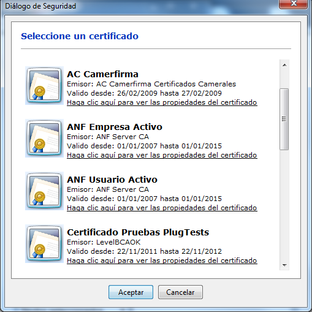
- Figura 5: Selección de certificado
Por defecto, sólo se mostrarán aquellos certificados aptos para realizar una firma electrónica (independientemente de como se declare en campo KeyUsage explicado en siguiente apartado). Si desea que se muestren todos los certificados, a fin de seleccionar uno con un fin distinto al de firma, utilice el método setShowOnlySignatureCertificates(boolean). Al pasar el valor, false a este método se mostrarán todos los certificados del almacén seleccionado, independientemente de si son válidos para firma o no.
Para indicar los receptores de los sobre digitales se deberán introducir las direcciones de sus certificados exportados (ficheros CER o DER). El método utilizado es setRecipientsToCMS(String) y recibe una cadena con las rutas de los certificados separadas por el carácter ‘\n’. Por ejemplo:
clienteFirma.setRecipientsToCMS("C:/detinatario1.cer\nC:/destinatario2.cer");
De forma independiente a los receptores indicados mediante el método setRecipientsToCMS, es posible configurar receptores adicionales de sobre digital mediante el método addRecipientToCMS que recibe el certificado del receptor codificado en base 64. Para eliminar alguno de los receptores agregados mediante este método puede utilizarse removeRecipientToCMS.
Un punto importante a destacar es que el método getCertificateAlias() proporciona los alias reales con los que los certificados han sido dados de alta en los almacenes (que son siempre los que deben usarse con setSelectedCertificateAlias(String)), pero que el diálogo de selección de certificado solicita la selección en base a un “nombre descriptivo”, que se compone a partir del Nombre Común (CN) del titular, el alias real si procede y el nombre de la entidad emisora. Este “nombre descriptivo” se usa porque en muchas ocasiones los alias reales no son realmente descriptivos o están en formatos poco prácticos (como X.500).
Filtros de certificados
El Cliente de firma incorpora una funcionalidad que permite hacer una preselección de los certificados que se muestran para selección al usuario, de forma que se puedan descartar a priori los no aceptados o no apropiados y así disminuir la probabilidad de que el usuario erre en la elección del certificado adecuado.
El establecimiento de los filtros se realiza mediante el método addRFC2254CertificateFilter(String, String, boolean), que admite tres parámetros:
- Filtro a aplicar en el campo Principal del titular del certificado X.509.
- Debe proporcionarse una cadena de texto con una condición de filtro según la normativa RFC 2254.
- Filtro a aplicar en el campo Principal del emisor del certificado X.509
- Debe proporcionarse una cadena de texto con una condición de filtro según la normativa RFC 2254.
- Se indicará true si se desea que solo se muestren los certificados aptos para firma electrónica según el campo KeyUsage del certificado X.509, false si no se desea hacer distinción por el valor de este campo.
El paso de null en cualquiera de los parámetros indica que, por el criterio correspondiente, no se aplicará ningún filtro. Para más información, consulte la documentación JavaDoc.
Ejemplos de uso:
- Selección entre certificados de firma de DNIe:
- clienteFirma.addRFC2254CertificateFilter(null, "cn=AC DNIE*", true);
- Selección entre cualquier certificado marcado como apto para firma electrónica:
- clienteFirma.addRFC2254CertificateFilter(null, null, true);
- Selección únicamente entre certificados emitidos por Camerfirma:
- clienteFirma.addRFC2254CertificateFilter(null, "o=Camerfirma", false);
- Selección con diversos criterios en un mismo Principal:
- clienteFirma.addRFC2254CertificateFilter("(&(OU=Clase 2 persona fisica)(C=ES))", null, false);
- Selección entre certificados de un titular cuyo número de DNI sea “123456789Z” (funciona con la mayoría de los emisores de certificados, como DNIe, FNMT, etc.):
- clienteFirma.addRFC2254CertificateFilter("SERIALNUMBER=123456789Z", null, false);
- Selección del certificado de firma del DNIe de un titular con número de DNI “123456789Z”:
-
clienteFirma.addRFC2254CertificateFilter("SERIALNUMBER=123456789Z", "cn=AC DNIE*", true);
Un filtro establecido mediante este método bloquearía todos aquellos certificados que no cumpliesen las 3 condiciones indicadas en el filtro: subject, issuer y keyusage.
Utilizando varias veces este método podemos agregar nuevos filtros, de tal forma que un certificado será válido cuando cumpla al menos uno de ellos.
Ejemplo de uso:
- Selección del certificado de firma del DNIe y los certificados expedidos por Camerfirma:
-
clienteFirma.addRFC2254CertificateFilter(null, "cn=AC DNIE*", true);
-
clienteFirma.addRFC2254CertificateFilter(null, "o=Camerfirma", false);
Para borrar los filtros establecidos, ya sea para obtener todos los certificados del almacén o introducir nuevos filtros, usaremos el método resetFilters().
Es posible solicitar al cliente que, en caso de que sólo exista un certificado en el almacén o sólo un certificado pase los filtros indicados, se seleccione automáticamente, sin dar al usuario la posibilidad de elegir. Esto se puede hacer mediante el método setMandatoryCertificate(boolean). Por defecto, se mostrará el diálogo de selección aunque sólo haya un certificado disponible para seleccionar.
Si el filtro devolviese más de un certificado, se ignoraría el valor establecido mediante setMandatoryCertificate(boolean).
NOTA IMPORTANTE SOBRE FILTROS RFC2254: Los nombres de los campos X.500/LDAP que encontramos en la identificación del titular y el emisor de un certificado, se codifican internamente mediante un OID ASN.1 consistente en una sucesión de números separados por puntos.
Estos OID se traducen para una mayor facilidad de lectura en palabras asociadas. Por ejemplo, el OID 2.5.4.4 identifica al campo apellido, y se traduce por la palabra SURNAME.
No obstante, el diccionario de traducción de OID a palabras legibles no es unívoco, y existe la posibilidad de que a un mismo OID le correspondan dos palabras. Siguiendo con el ejemplo anterior, aunque la mayoría de los diccionarios asocian la palabra SURNAME al OID 2.5.4.4, algunos le asocian la palabra SN.
Adicionalmente, otro inconveniente que podemos encontrar es que un determinado diccionario de OID no contenga ninguna palabra asociada a un OID particular. Un ejemplo de este caso podríamos encontrarlo en el OID 0.2.262.1.10.12.0, que aunque corresponde a la palabra liabilityLimitationFlag no figura en los diccionarios comunes. Cuando un OID no figura en un diccionario se usa directamente el OID.
El Cliente @firma utiliza el diccionario de OID de Java, que puede diferir del usado por el sistema operativo y de los usados por otras aplicaciones.
Para evitar problemas de filtrado debidos a estas circunstancias, debe construir siempre los filtros previendo que un campo puede aparecer referenciado por cualquiera de sus nombres o por su OID.
Por ejemplo, si desea filtrar por apellido, la expresión de filtrado debe ser construida de forma que funcione correctamente tanto si este aparece referenciado por su OID (2.5.4.4) como por cualquiera de sus palabras descriptivas (SURNAME, SN, etc.).
Independientemente de que se utilicen en el filtro todas las palabras posibles con las que se identifique un OID, listamos a continuación las opciones preferentes para los OID más comunes para los que se conocen varias de estas palabras:
-
2.5.4.4: SURNAME
-
2.5.4.4: GIVENNAME
-
1.2.840.113549.1.9.1: EMAILADDRESS
-
2.5.4.12 = T
-
2.5.4.46 = DNQ
-
2.5.4.43 = INITIALS
-
2.5.4.44 = GENERATION
Consulte la documentación sobre la normativa RFC 2254 para obtener más información de cómo construir adecuadamente sus filtros.
Información adicional:
-
Copia de la normativa RFC 2254:
- Ejemplo de diccionario de OID:
La marca de certificado apto para firma electrónica en el atributo KeyUsage de un certificado X.509
La inmensa mayoría de los certificados digitales usan el atributo X.509 KeyUsage para determinar el uso de un certificado (autenticación, firma electrónica, SSL servidor, etc.), por lo que distinguir por este para la selección del certificado apropiado para las operaciones de firma es en general una buena opción.
No obstante, la mayoría de los certificados emitidos por la FNMT-RCM (CERES, APE, etc.) no siguen las normativas internacionales en este sentido y en el atributo KeyUsage no marcan que son adecuados para firma electrónica pese a que se publicitan como aptos para dicho uso. Debido a esta falta de adecuación, si se marca mediante el último parámetro del método anteriormente comentado que solo deben mostrarse certificados aptos para firma, no se mostrará ningún certificado emitido por la FNMT-RCM.
Los certificados del DNIe sin embargo si siguen las normativas internacionales y marcan con los atributos correspondientes el uso, encontrándonos en cada DNIe un certificado apto para firma y otro que no lo es (el de autenticación).
Para consultar el significado preciso de cada uno de los valores del campo KeyUsage consulte con el emisor de sus certificados.
Configuración de firma
Algoritmos de firma digital
El cliente permite usar distintos algoritmos de firma digital, siempre especificados con el formato AwithB, donde A es el algoritmo de huella digital y B el de cifrado asimétrico. Entre los algoritmos soportados encontramos:
-
SHA1withRSA (por defecto)
-
SHA256withRSA
-
SHA384withRSA
-
SHA512withRSA (es el más seguro)
El algoritmo a utilizar se puede cambiar con el método setSignatureAlgorithm, que recibe como parámetro una de las cadenas citadas.
No se soportan los algoritmos obsoletos MD2 o MD5.
NOTAS IMPORTANTES:
-
No todas las operaciones soportan todos los algoritmos:
-
Los formatos de firma XAdES y XMLDSig solo soportan firmas con algoritmos SHA-2 (SHA256withRSA, SHA384withRSA y SHA512withRSA) en versiones posteriores a Java 6 update 18. En las primeras versiones de Java 7, se produjo un error de regresión de Java que trajo de vuelta este problema. En las últimas versiones de Java 7 este error está solucionado.
-
No todos los almacenes de certificados soportan todos los algoritmos:
- SHA256withRSA, SHA384withRSA y SHA512withRSA no están soportados en la configuración tradicional del almacén de Windows hasta versiones avanzadas de Java 6. En las primeras versiones de java 7 tampoco es posible.
-
Los formatos de firma no genéricos (ODF, OOXML, PDF) ignorarán cualquier configuración especificada por el integrador que no esté soportada por su correspondiente normativa. Por ejemplo, modo de firma explícito, algoritmos de firma no soportados…
-
Formato de firma electrónica
El cliente permite crear firmas digitales en distintos formatos (por defecto CAdES).
Globalmente se soportan los siguientes formatos y normativas de firma electrónica:
-
CMS: Representado por la cadena “CMS/PKCS#7”.
-
CAdES: Representado por la cadena “CAdES”.
-
XMLDSig Internally Detached: Representado por la cadena “XMLDSig Detached”.
-
XMLDSig Enveloping: Representado por la cadena “XMLDSig Enveloping”.
-
XMLDSig Enveloped: Representado por la cadena “XMLDSig Enveloped”.
-
XAdES Internally Detached: Representado por la cadena “XAdES Detached”.
-
XAdES Enveloping: Representado por la cadena “XAdES Enveloping”.
-
XAdES Enveloped: Representado por la cadena “XAdES Enveloped”.
-
Factura Electrónica: Representado por la cadena “FacturaE”.
-
PAdES: Representado por la cadena “Adobe PDF”.
-
ODF (Open Document Format): Representado por la cadena “ODF”.
-
OOXML (Office Open XML): Representado por la cadena “OOXML”.
El formato se puede cambiar con el método setSignatureFormat que recibe como parámetro la cadena que representa al formato en cuestión.
Las variantes EPES de los formatos de firma que las soportan se generarán automáticamente al configurar el formato de firma correspondiente y una política de firma (consulte el apartado Política de Firma).
Modos de firma electrónica
Determinados formatos de firma electrónica soportan los llamados, modos de firma. El modo de firma determina si los datos firmados se incorporarán o no junto con la firma electrónica generada. Los modos de firma existentes son:
-
Implícito: Representado por la cadena “implicit”.
-
Explícito: Representado por la cadena “explicit”.
El modo de firma se puede cambiar con el método setSignatureMode que recibe como parámetro la cadena que representa al modo en cuestión. Los parámetros son insensibles a mayúsculas y minúsculas.
Los formatos soportados por el cliente @firma que admiten configuración de modo son:
-
CMS/PKCS#7
-
CAdES
-
XMLdSig Detached
-
XMLdSig Enveloping
-
XAdES Detached
-
XAdES Enveloping
Un formato de firma puede definir modos propios válidos para su configuración.
Política de Firma
El cliente permite especificar, para cada firma electrónica, la política a la que esta se adecúa. Los formatos de firma, soportados por el cliente, que admiten políticas de firma son CAdES, PDF/PAdES y XAdES (en sus variantes Detached, Enveloping y Enveloped). En el momento de establecer en el cliente la política de firma para una firma CAdES, se generará una firma CAdES-EPES en lugar de la firma CAdES-BES tradicional. De igual manera, al establecer la política de firma para una firma XAdES o PAdES se generará una firma XAdES-EPES o PAdES-EPES, respectivamente.
Las firmas con política generadas por el cliente @firma son de referencia externa. Es decir, la política no se incluye en la propia firma, tan sólo una referencia a la misma.
Es posible establecer una política de firma en el cliente @firma mediante el método setPolicy que recibe como parámetros 4 cadenas:
-
Identificador: URI identificadora de la política de firma (normalmente una URL hacia el XML o el ASN.1 que formaliza la política) u OID (que puede estar en forma de URN) identificador de la política.
-
Descripción: Descripción breve de la política.
-
Calificador: URL calificadora de la política de firma (normalmente la URL apunta a un documento en formato PDF que describe la política).
-
Hash: Huella digital SHA-1 en base64 de la política de firma.
Ejemplo de uso:
setPolicy(
"urn:oid:2.16.724.1.3.1.1.2.1.9",
"Politica de firma electronica para las Administraciones Publicas en Espana",
"https://sede.060.gob.es/politica_de_firma_anexo_1.pdf",
"G7roucf600+f03r/o0bAOQ6WAs0="
);
En cualquier caso, para el establecimiento de estos parámetros, consulte con detenimiento los documentos de su política de firma y establezca los valores que allí se indiquen.
Restricción de formatos, algoritmos y modos de firma en las políticas de firma
La mayoría de las políticas de firma restringen la forma en la que se puede realizar una firma electrónica acorde a la política concreta. Esta restricción puede afectar a casi cualquier aspecto de la firma, y entre estos aspectos encontramos:
-
Los algoritmos de firma (SHA1withRSA, SHA512withRSA, etc.) que pueden utilizarse.
-
El tipo de firma admitido (CAdES, PAdES, XAdES, etc.).
-
Las variantes de firma admitidas (explícitas, implícitas, enveloping, enveloped, externally detached, internally detached, etc.).
- Por ejemplo, las firmas XAdES-EPES conformes a la política de firma de la AGE en su versión 1.9 deben ser siempre de tipo “Internally Detached” (preferiblemente) o “Enveloped”.
-
Etc.
Si especifica una política de firma en sus firmas electrónicas, debe asegurarse de que la totalidad de los parámetros de esta sean compatibles con dicha política, leyendo con detenimiento tanto la documentación del Cliente @firma como la versión PDF de descripción de la política de firma.
Configuración de sobres digitales
Selección de destinatarios desde LDAP
Además de la posibilidad de seleccionar los destinatarios de un sobre digital a partir de sus certificados de clave pública almacenados en disco, el cliente @firma permite la configuración de un LDAP para seleccionar los certificados que este tenga publicados.
El procedimiento para la selección de estos certificados es la siguiente:
- Configuración del servidor LDAP al que se desea acceder. Esto lo conseguimos mediante el método setLdapConfiguration (String address, String port, String root). Este método recibe:
-
address: Dirección URL del LDAP.
-
port: Puerto a través del que se realiza la conexión. Si no se indica se usará el puerto 389, el por defecto para LDAP.
-
root: Dirección raíz del LDAP (actualmente sin uso).
-
Selección del certificado que se desea recuperar del LDAP. Para ello se utilizará el método setLdapCertificatePrincipal, que recibe como parámetro el principal del certificado que deseamos.
-
Recuperación del certificado en base 64 mediante el método getLdapCertificate.
-
Configuración del destinatario del sobre indicándolo mediante el método addRecipientToCMS, que recibe como parámetro el certificado en base 64 recuperado del LDAP. Pueden agregase más de un destinatario de esta manera.
Una vez establecido un destinatario, puede eliminarse mediante el método removeRecipientToCMS al que se le pasa como parámetro el mismo certificado en base 64 con el que se estableció.
Configuración de cifrado
Algoritmos de cifrado
Los algoritmos de cifrado permitidos son los siguientes:
-
Cifrado con clave
-
AES (por defecto)
-
ARCFOUR
-
Blowfish
-
DES
-
DESede (triple DES o 3DES)
-
RC2
-
-
Cifrado con contraseña
-
PBEWithSHA1AndDESede (basado en DESede/3DES)
-
PBEWithSHA1AndRC2_40 (basado en RC2)
-
PBEWithMD5AndDES (basado en DES)
-
Para establecer el algoritmo deberemos invocar la función setCipherAlgorithm y podemos recuperar el algoritmo actual con el método getCipherAlgorithm.
Modo de clave
Definen de qué manera se trata la clave de cifrado. Existen tres posibilidades GENERATEKEY, USERINPUT y PASSWORD.
-
GENERATEKEY: La clave se generará automáticamente.
-
USERINPUT: El usuario deberá establecer la clave en base 64.
-
PASSWORD: La clave de usuario se generará a partir de una contraseña. Esto requiere el uso de algoritmos de cifrado diseñados con este objetivo (algoritmos PBE).
El modo de clave se establece mediante setKeyMode y se recupera con getKeyMode.
Clave y contraseña de cifrado
Para obtener la clave que se ha utilizado para el cifrado/descifrado deberemos ejecutar el método getKey, el cual nos devolverá la clave codificada en base 64. Para fijar una clave para el cifrado o descifrado de datos usaremos setKey, adjuntando como parámetro la clave deseada en base 64.
En el caso de haber especificado el modo de clave PASSWORD (consultar apartado Modo de clave), en lugar de una clave de cifrado será necesario especificar una contraseña de cifrado. Para establecer la contraseña de cifrado/descifrado se utilizará el método setPassword. Para recuperar la contraseña establecida se utilizará el método getPassword.
ADVERTENCIA: Las contraseñas de cifrado/descifrado no podrán contener caracteres no ASCII.
Almacén de claves de cifrado
El cliente @firma v3.2 y superiores permiten a los usuarios almacenar sus claves de cifrado en un almacén de claves protegido por contraseña.
Es posible configurar el cliente @firma para que, en el momento de autogenerar una clave de cifrado se ofrezca al usuario la posibilidad de almacenarla en su almacén personal de claves. Para esto será necesario configurar el Cliente en modo “GENERATEKEY” tal como se indica en el apartado Modo de clave.
En caso de que el usuario acepte almacenar la clave en su almacén, se comprobará que este ya exista. Si existía, se le solicitará al usuario la contraseña para abrirlo y el alias con el que desea almacenar la clave. Si no existía, se le indicará al usuario y se le dará la posibilidad de crearlo para lo que se le solicitará la contraseña con la que desea protegerlo. Tras crear el almacén se procederá a almacenar la clave tal como ya se indicó.
En caso de rechazarse el guardado de la clave en el almacén, se cancelará toda la operación de cifrado pues el que se hubiese habilitado es signo de que la web delegaba en el usuario la gestión de la clave y este posiblemente no tenga posibilidad de hacerlo, ya que es posible que no se le haya mostrado la clave.
El almacén de claves se guarda con el nombre ciphkeys.jceks en el directorio raíz del usuario activo. Al encontrarse en este directorio, el almacén será distinto para cada usuario del sistema que utilice el Cliente y un usuario no podrá acceder al almacén del resto de usuarios. Tenga en cuenta que si este fichero es eliminado no se podrán recuperar las claves almacenadas en él, por lo que es posible que no pueda recuperar los datos cifrados con el Cliente.
El integrador puede permitir al usuario utilizar sus claves ya almacenadas en el almacén para cifrar nuevos datos. Para esto sólo sería necesario configurar el modo de clave del Cliente al valor “USERINPUT” (consultar apartado Modo de clave) y ejecutar la operación de cifrado.
Cuando se desee descifrar un contenido y no se haya indicado directamente la clave para el descifrado, se le preguntará al usuario si desea tomar la clave de su almacén personal. En caso de aceptar, se le pedirá la contraseña del almacén y se le dará a elegir mediante un diálogo modal entre las claves almacenadas (de las que se mostrará el alias asignado y el algoritmo de cifrado para el que fueron generadas). Si no existiese el almacén de claves o el usuario no quisiera utilizarlo, se le preguntaría directamente por la clave de cifrado.
Cuando se activa el modo de clave para el cifrado/descifrado con contraseñas (modo “PASSWORD” establecido según el apartado Modo de clave) el almacén de claves queda inhabilitado.
Queda a elección del integrador la posibilidad de permitir que el usuario pueda o no almacenar la clave de cifrado en su almacén personal de claves o utilizar las almacenadas para cifrar. Esto puede hacerlo mediante el método setUseCipherKeystore al que se le puede pasar un true o un false para permitir o no su uso (por defecto se permitirá almacenarlas). Este método no afecta al descifrado de datos. Si no se indicase la clave para el descifrado y el usuario dispusiese de un almacén de claves, siempre se le dará la posibilidad de descifrar mediante una de las claves almacenadas.
A continuación se muestran algunos ejemplos para el uso del almacén de claves de cifrado:
-
Cifrado con las opciones por defecto (algoritmo de cifrado AES con una clave autogenerada) permitiendo que el usuario almacene la clave en su almacén:
…
clienteFirma.setFileuri(“fichero_texto”);
clienteFirma.cipherData();
var cipheredData = clienteFirma.getCipherData();
…
-
Cifrado con las opciones por defecto (algoritmo de cifrado AES con una clave autogenerada) NO permitiendo que el usuario almacene la clave en su almacén:
…
clienteFirma.setFileuri(“fichero_texto”);
clienteFirma.setUseCipherKeyStore(false);
clienteFirma.cipherData();
var cipheredData = clienteFirma.getCipherData();
…
-
Cifrado con una clave tomada del almacén del usuario (si no existiese se solicitaría directamente al usuario):
…
clienteFirma.setFileuri(“fichero_texto”);
clienteFirma.setKeyMode(“USERINPUT”);
clienteFirma.cipherData();
var cipheredData = clienteFirma.getCipherData();
…
-
Descifrado con una clave tomada del almacén del usuario:
…
clienteFirma.setFileuri(“fichero_cifrado”);
clienteFirma.decipherData();
var plainData = clienteFirma.getPlainData();
…
Otras funcionalidades
Guardar la firma en un fichero
El método saveSignToFile permite guardar la última firma generada en un fichero. Se puede especificar la ruta al fichero con setOutFilePath, que recibe una cadena con la ruta al fichero de salida. Si no se especifica, se permitirá elegir al usuario.
Si el integrador es quien ha decidido la ruta de guardado mediante el método setOutFilePath, se pedirá confirmación al usuario para el guardado del fichero.
Si el fichero ya existe, se pide confirmación:
<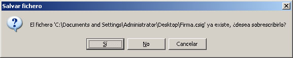
- Figura 7: Diálogo para confirmar la sobreescritura de ficheros
Obtener el certificado usado para firmar
Es posible recuperar el certificado utilizado en la última operación de firma mediante el método getSignCertificate. Este método obtiene una instancia de la clase X509Certificate de Java.
El método getSignCertificateBase64Encoded devuelve una cadena de texto con el certificado, codificado en base 64, utilizado en para la última firma realizada. El certificado no estará delimitado por ninguna cadena ASCII ni carácter extra.
Leer el contenido de un fichero de texto
El método getTextFileContent que recibe como parámetro una URI a un fichero devuelve el contenido del mismo como una cadena. Si el fichero está almacenado en local, la URI comenzará por “file:///”.
Leer el contenido de un fichero en Base64
El método getFileBase64Encoded que recibe dos parámetros (ruta al fichero y un booleano que indica si mostrar o no gráficamente al usuario el progreso en la lectura del fichero). En caso de producirse un error se devolverá null.
Convertir un texto plano a Base64
El método getBase64FromText recibe como parámetros un texto plano y el nombre de un juego de caracteres y codifica este primero a base 64 en base al juego de caracteres indicado. En caso de producirse un error se devolverá null.
Es importante tener en cuenta que el indicar un juego de caracteres u otro en este método no implica que el texto se recodifique antes de convertirse en Base64, sino que la secuencia interna de caracteres se interprete de una u otra manera. En caso de dudas sobre el juego de caracteres más apropiado a usar, se debe especificar null, y el sistema usará el por defecto o el más adecuado. Este aspecto es de especial relevancia en el caso de textos que representen XML bien formados, ya que la especificación de un juego de caracteres inadecuado provocará la introducción de caracteres extraños que invalidarán el XML.
Obtener el hash de un fichero
El método getFileHashBase64Encoded devuelve una cadena con el hash de un fichero codificado en base 64. En caso de producirse un error se devolverá null.
Obtener la ruta de un fichero
Para permitir a un usuario obtener la ruta completa de un fichero el cliente dispone del método loadFilePath(String, String, String). Este método abre una ventana modal para la selección de un fichero. Es posible configurar el diálogo de selección a través de los parámetros que recibe la función y que son respectivamente:
-
El título de la ventana de selección.
-
El listado de extensiones permitidas separadas por “$%$”.
-
La descripción del fichero que se busca.
Todos los parámetros pueden ser nulos.
La salida de este método puede utilizarse para configurar la entrada del cliente mediante el método setFileuri.
ADVERTENCIA: Este método bloquea el script desde el que se ejecuta a la espera de que el usuario seleccione un fichero mediante el diálogo mostrado. Este comportamiento puede hacer que algunos navegadores muestren al usuario una advertencia informando que el script está ocupado y puede ser dañino, dándole la posibilidad de bloquearlo. En caso de que se desee evitar esta interferencia, es responsabilidad del integrador ejecutar este método de forma asíncrona al resto del script (por ejemplo, mediante AJAX).
Obtener la ruta de un directorio
Para permitir a un usuario obtener la ruta completa de un directorio puede hacerse uso el método selectDirectory. Este método devuelve la ruta absoluta al directorio.
ADVERTENCIA: Este método bloquea el script desde el que se ejecuta a la espera de que el usuario seleccione un directorio mediante el diálogo mostrado. Este comportamiento puede hacer que algunos navegadores muestren al usuario una advertencia informando que el script está ocupado y puede ser dañino, dándole la posibilidad de bloquearlo. En caso de que se desee evitar esta interferencia, es responsabilidad del integrador ejecutar este método de forma asíncrona al resto del script (por ejemplo, mediante AJAX).
Ejemplos de uso
Junto al cliente se distribuyen los siguientes ficheros HTML de ejemplo de uso del cliente:
-
demoMultifirma.html: Ejemplos de firma, co-firma y contra-firma
-
demoMultifirmaMasiva.*html*: Ejemplo de multifirma masiva programática.
-
demoFirmaDirectorios.*html*: Ejemplo de multifirma masiva sobre directorios.
-
demoCifrado.html: Ejemplo de cifrado.
-
demoSobreDigital.html: Ejemplo de CMS encriptado, CMS envuelto y CMS firmado y envuelto.
-
demoKeyStores.html: Ejemplo de la funcionalidad de cambio de almacén de certificados.
-
demoLdap.html: Ejemplo de la carga de certificados desde LDAP.
Buenas prácticas en la integración del cliente
Localizar la ruta del Applet Cliente @firma
Aunque la librería que facilita el uso del cliente (instalador.js) toma como dirección por defecto de los recursos del cliente la del HTML que lo carga, es muy recomendable el establecer la ruta del Cliente explícitamente. En concreto, el parámetro a establecer se encuentra en el fichero constantes.js:
-
base: Ruta del directorio en el que se encuentra el Applet Cliente @firma. Esta ruta debe apuntar al directorio en donde se encuentran las construcciones de este Applet, no a ninguna construcción en concreto. Por ejemplo, si la localización de una de las construcciones fuese “http://www.minhap.es/clienteAfirma/ COMPLETA_j6_afirma5_core.jar” la dirección que se debería establecer sería “http://www.minhap.es/clienteAfirma”.
Las rutas indicadas pueden ser absolutas o relativas. Las rutas absolutas deben comenzar por "file:///" (nótese la triple barra), "http://" o "https://" (por ejemplo, "file:///C:/ficheros", "http://www.minhap.es/ficheros",...) y las rutas relativas no pueden empezar por "/" (por ejemplo, "afirma/ficheros"). Se debe usar siempre el separador "/", nunca "\.
La configuración de esta ruta, asegura la completa localización del cliente independientemente de la distribución de los HTML de la aplicación Web o de si estos se generan automáticamente. En este último caso sería necesario establecer la ruta absoluta de los directorios.
Reducir las opciones de configuración
Siempre debe ofrecerse al usuario el menor número de opciones de configuración posibles sobre el proceso de firma o cualquier otra operación criptográfica. Son dos los aspectos que llevan a esta decisión:
-
El cliente de firma comúnmente se integra en las aplicaciones Web para un fin determinado como puede ser el envío de un formulario Web firmado, por ejemplo, por lo que es el sistema de backend el receptor de los datos generados y el que finalmente debe almacenarlos y gestionarlos. En este caso, es lógico que sea el integrador el que decida la configuración y condiciones de la operación.
-
La finalidad del usuario, no suele ser el propio uso del cliente, sino el acceso al servicio dado por la aplicación que lo integra. De esta forma, los usuarios no tienen por qué conocer detalles de las operaciones criptográficas que se realizan y ni siquiera conocimientos de los conceptos relacionados con la firma electrónica. En estos casos conviene simplificarle la tarea y no llevarle a dudar acerca de la opción más acertada para su fin concreto.
Configuración y uso del cliente en operaciones únicas
En el caso de que la ejecución de las operaciones del cliente dependan de una configuración introducida por el usuario o generada en tiempo de ejecución, es recomendable el realizar la configuración y ejecución de la operación criptográfica sin dar posibilidad de alterar el proceso. Por ejemplo, una forma de proceder sería el inicializar y configurar el cliente nada más cargarlo (filtro de certificados, datos obtenidos de una ventana anterior…) y establecer el resto de la configuración a medida que el usuario inserta los datos (formato de firma, datos a firmar, certificado de usuario,…) para, finalmente, sólo ejecutar la operación de firma. Este mecanismo tiene el inconveniente que cualquier interrupción en el cliente puede desechar toda esa información y terminar operando con una configuración por defecto en lugar de la indicada por el usuario.
En su lugar, es recomendable que, una vez se vaya a realizar la operación criptográfica, sea cuando se configure el cliente. Como ejemplo, en una implementación genérica JavaScript de invocación al cliente esto sería:
// Inicializamos la configuración para asegurar que no hay preestablecido
// ningún valor de operaciones anteriores
clienteFirma.initialize();
// Configuramos todos los parámetros del cliente, ya sea con datos directorios o
// extraídos de la página (formularios, contexto de la aplicación,…)
clienteFirma.setSignatureFormat("CADES");
clienteFirma.setSignatureAlgorithm("SHA1withRSA");
clienteFirma.setFileuri(document.getElementById("fichero").value);
// Ejecutamos la operación que corresponda
clienteFirma.sign();
Este modo de ejecución ayudará a evitar que, por ejemplo, el refrescar la página Web con F5 se pierda la sincronización con la configuración real del cliente con la que pueda verse en un momento determinado en la página Web. El uso de la tecla F5 o el botón “Refrescar Pantalla” debe evitarse siempre cuando nos encontremos a medias de un procedimiento online. En el caso de que el entorno de despliegue pueda detectarlo, incluso es recomendable que se obligue al usuario a reiniciar el procedimiento completo.
Funciones y métodos en la interfaz Applet del cliente @firma v3.x añadidos respecto a versiones anteriores
public String getCertificate(final String alias)
Obtiene el certificado X.509 correspondiente al alias proporcionado. El resultado es el certificado en Base64 delimitado por las cadenas ASCII -----BEGIN CERTIFICATE----- y -----END CERTIFICATE-----.
public String getCertificatePublicKey(final String alias)
Obtiene la clave pública del certificado X.509 correspondiente al alias proporcionado. El resultado es una clave RSA en Base64 delimitado por las cadenas ASCII -----BEGIN RSA PUBLIC KEY----- y -----END RSA PUBLIC KEY-----.
public String getCertificates()
Obtiene todos los certificados del almacén actual en una única cadena en donde los elementos se dividen mediante el separador STRING_SEPARATOR definido como constante en el cliente. El formato individual de los certificados es el mismo que el devuelto por el método public String getCertificate(final String alias). También es posible obtener de forma segura un array con los certificados mediante el método JavaScript getCertificates() definido en “firma.js”.
public String[] getArrayCertificates()
Obtiene todos los certificados del almacén actual en un array unidimensional, con el mismo formato individual que el devuelto por el método public String getCertificate(final String alias).
public String getCertificatesAlias()
Se ha considerado útil que el integrador, vía JavaScript, pueda obtener los alias del almacén de certificados utilizado por el navegador Web activo. Este método obtiene los alias de los certificados en una única cadena separándolos mediante la constante STRING_SEPARATOR definida en el cliente. También es posible obtener de forma segura un array con los alias de los certificados mediante el método JavaScript getCertificatesAlias() definido en “firma.js”. Para más información, consulte la documentación en formato JavaDoc.
public String[] getArrayCertificatesAlias()
Se ha considerado útil que el integrador, vía JavaScript, pueda obtener los alias del almacén de certificados utilizado por el navegador Web activo. Para más información, consulte la información en formato JavaDoc.
public void setSelectedCertificateAlias(String certAlias)
Como complemento al método anterior, se ha considerado útil que el integrador, vía JavaScript, pueda establecer el alias del certificado a utilizar por el Applet en el navegador Web activo. Para más información, consulte la información en formato JavaDoc.
public boolean signDirectory()
Para las funciones de firma masiva, firma todos los archivos de un directorio según la configuración establecida. Para más información, consulte la información en formato JavaDoc.
public boolean initMassiveSignature()
Inicializa una operación de firma masiva programática. Esto toma la configuración actual de certificado, formato de firma, algoritmo, modo, etc y la aplica a cada firma individual generara mediante los métodos massiveSignatureData(), massiveSignatureFile() y massiveSignatureHash(). La operación de firma masiva programática finaliza al invocarse al método endMassiveSignature(). Para más información, consulte la información en formato JavaDoc.
public void endMassiveSignature()
Finaliza un proceso de firma masiva. Hasta que no se inicie un nuevo proceso mediante el método initMassiveSignature() no será posible realizar firmas/multifirmas mediante los métodos massiveSignatureData(), massiveSignatureFile() y massiveSignatureHash(). Para más información, consulte la información en formato JavaDoc.
public String massiveSignatureData(String b64Data)
Genera una firma/multifirma, dentro de un proceso de firma, a partir de los datos indicados en base 64. La operación concreta realizada se debe indicar con setMassiveOperation(String). El método devuelve el resultado de la operación criptográfica. Para más información, consulte la información en formato JavaDoc.
public String massiveSignatureFile(String path)
Genera una firma/multifirma, dentro de un proceso de firma, a partir del fichero cuya ruta se ha indicado. La operación concreta realizada se debe indicar con setMassiveOperation(String). El método devuelve el resultado de la operación criptográfica. Para más información, consulte la información en formato JavaDoc.
public String massiveSignatureHash(String b64Hash)
Genera una firma/multifirma, dentro de un proceso de firma, a partir del hash indicado en base 64. Este método requiere que se haya establecido la operación de firma mediante el método setMassiveOperation(String). El método devuelve el resultado de la operación criptográfica. Para más información, consulte la información en formato JavaDoc.
public void setMassiveOperation(String massiveOperation)
Para las funciones de firma masiva, establece la operación masiva a realizar en el proceso generado por el método signDirectory() o los métodos de firma masiva programática (massiveSignatureData(), massiveSignatureFile() y massiveSignatureHash()). Las operaciones masivas aceptadas son “FIRMAR”, “COFIRMAR”, “CONTRAFIRMAR_ARBOL” y “CONTRAFIRMAR_HOJAS”. Para más información, consulte la información en formato JavaDoc.
public void setOriginalFormat(boolean originalFormat)
Para las funciones de firma masiva, indica si se debe respetar el formato de firma original para las operaciones de multifirma masiva o, si en cambio, se usará la configuración de firma establecida para todas las firmas. Para más información, consulte la información en formato JavaDoc.
public String getInputDirectoryToSign()
Para las funciones de firma masiva, devuelve la ruta absoluta del directorio donde se ubican los ficheros a ser firmados de forma masiva. Para más información, consulte la información en formato JavaDoc.
public void setInputDirectoryToSign(String directory)
Para las funciones de firma masiva, establece el directorio de donde se tomarán los ficheros de firma y datos para la operación de firma masiva. Para más información, consulte la información en formato JavaDoc.
public String getOutputDirectoryToSign()
Para las funciones de firma masiva, devuelve la ruta absoluta del directorio donde se almacenarán las firmas resultado de la operación de firma masiva. Para más información, consulte la información en formato JavaDoc.
public void setOutputDirectoryToSign(String directory)
Para las funciones de firma masiva, establece el directorio donde se depositarán las firmas masivas de los archivos situados en InputDirectoryToSign. Para más información, consulte la información en formato JavaDoc.
public void setInIncludeExtensions(String extensions)
Para las funciones de firma masiva, define las extensiones que se incluirán en la firma de directorios. Para más información, consulte la información en formato JavaDoc.
public void setInRecursiveDirectorySign(boolean recursiveSignDir)
Para las funciones de firma masiva, establece si la firma de directorios se efectuará de forma recursiva o no. Para más información, consulte la información en formato JavaDoc.
public void setFileuriBase64(String uri)
Establece los datos contenidos en el fichero indicado (en donde se encontrarán codificados en base 64), como los datos de entrada para las operaciones criptográficas y establece la ruta introducida como ruta de entrada.
El contenido del fichero se interpretará siempre como datos en base 64 no realizándose la comprobación previa de los mismos.
public String loadFilePath(String title, String exts, String description)
Muestra un diálogo modal para la selección de un fichero del que se recuperará su ruta completa. Para más información, consulte la información en formato JavaDoc.
addRFC2254CertificateFilter(String subjectFilter, String issuerFilter, Boolean signatureKeyUsage)
Agrega un filtro al listado de filtros de certificados de usuario. Los filtros limitarán los certificados que se muestran al usuario para su selección a sólo aquellos que cumplan, al menos, uno de los filtros definidos.
Para más información consulte el apartado Filtros de certificados.
public void resetFilters()
Elimina todos los filtros de certificado definidos hasta el momento.
Para más información consulte el apartado Filtros de certificados.
public void setMandatoryCertificate(boolean mandatory)
Establece que debe seleccionarse automáticamente un certificado de firma si este es el único del almacén de certificados o, en caso de establecer filtros, si es el único que los cumple.
Para más información consulte el apartado Filtros de certificados.
Casos problemáticos de despliegue e integración del cliente
Despliegue del cliente en servidores Web que requieren identificación de los usuarios mediante certificado cliente
Applets de Java y Autenticación con Certificado Cliente
En los servidores en los que se requiere autenticación cliente (autenticación por certificado cliente) para acceder a un contenido, los Applets Java no son una excepción por lo que el acceso por parte de Java puede derivar en un error de conexión, ya que las conexiones que establece son independientes del navegador web.
El Plugin de Java contempla esta posibilidad, y gestiona la autenticación por certificado cliente de forma independiente de los Applets que ejecute, por lo que estos no deben implementar ningún cambio para adaptarse a estos entornos, siendo todo el proceso completamente transparente para ellos.
El almacén que usa el Plugin de Java para seleccionar el certificado en muestra al servidor Web varía según la configuración cliente, pero sigue en todos los casos el mismo proceso:
-
Intenta acceder primero al almacén nativo del navegador Web (MS-CAPI, Apple KeyRing o Mozilla/Firefox NSS).
-
Si por problemas de configuración el almacén nativo no pudiese ser accedido por el Plugin de Java, se selecciona el almacén propio del JRE.
-
Se pide al usuario que seleccione uno de los certificados del almacén finalmente seleccionado, que será el que se envíe al servidor Web.
La clasificación de los navegadores Web por almacén utilizado para los certificados y por sistema operativo es la siguiente:
-
Almacén de certificados MS-CAPI
-
Windows
-
Internet Explorer
-
Google Chrome
-
Apple Safari
-
Opera
-
-
-
Almacén de certificados del llavero de Apple OS X
-
Mac OS X
-
Apple Safari
-
Google Chrome
-
Opera
-
Internet Explorer
-
-
-
Almacén de certificados Mozilla / Firefox (NSS)
-
Windows
- Mozilla / Firefox
-
Linux / Solaris
-
Mozilla / Firefox
-
Google Chrome
-
Opera
A continuación, detallamos la configuración adicional necesaria en cada uno de los casos para el correcto funcionamiento en servidores Web que soliciten certificado cliente. Esta configuración no es específica para el Cliente @firma, sino que será necesaria para cualquier otro Applet de Java que establezca conexiones independientes del navegador con el servidor Web:
-
-
MS-CAPI
No es necesario ningún proceso adicional de configuración.
Mozilla / Firefox (NSS)
Es necesario instalar previamente en el entorno de ejecución de Java las bibliotecas JSS (Netscape Java Security Services), atendiendo a las siguientes precauciones:
- Ha de seguirse el proceso de instalación exactamente como se describe en la documentación de Java: http://java.sun.com/j2se/1.5.0/docs/guide/deployment/deployment-guide/keystores.html.
-
Las instrucciones publicadas por Sun Microsystems / Oracle están desactualizadas y no aplican para las últimas versiones de Mozilla Firefox, para las cuales deben seguirse los siguientes pasos:
-
Copiar el fichero jss4.jar al directorio de extensiones del entorno de ejecución de Java (JRE) en uso:
-
%JAVA_HOME%\lib\ext en sistemas Windows
-
$JAVA_HOME/lib/ext en sistemas basados en UNIX (Linux, Solaris, Mac OS X)
-
-
Copiar el fichero la biblioteca nativa de JSS en el directorio principal de bibliotecas del sistema operativo. Es necesario cerciorarse de que la biblioteca que copiemos corresponda con la versión y arquitectura de nuestro sistema operativo:
-
En sistemas Windows, el fichero jss4.dll debe copiarse al directorio %SystemRoot%\system32
-
En sistemas Linux y Solaris, el fichero jss4.so debe copiarse al directorio /lib o al directorio /usr/lib
-
En sistemas Mac OS X, el fichero jss4.dylib o el fichero jss4.so (dependiendo de la compilación utilizada) debe copiarse al directorio /lib o al directorio /usr/lib
-
-
- Hemos también de asegurarnos de que la versión instalada de JSS sea compatible con nuestra versión de Mozilla / Firefox. Consulte atentamente la documentación de los productos antes de proceder a instalarlos.
- Firefox 3 solo es completamente compatible con JSS 4.3.2 y superiores: https://developer.mozilla.org/En/JSS/4_3_ReleaseNotes, pero aun presenta ciertos problemas de compatibilidad en sistemas Windows. En cualquier caso, si encuentra dificultades, pruebe a instalar siempre la versión más actualizada.
- JSS puede descargarse de forma libre desde: ftp://ftp.mozilla.org/pub/mozilla.org/security/jss/releases/
- No obstante, para ciertas versiones de JSS, la Comunidad Mozilla no distribuye binarios, sino únicamente el código fuente.
Almacén propio de Java
Como se ha comentado anteriormente, cuando el Plugin del entorno de ejecución de Java (JRE) no puede acceder al almacén del navegador Web, solicita al usuario la selección de un certificado de su propio almacén.
El principal problema de esta opción es que JRE no accede a los módulos PKCS#11 o CSP del sistema, por lo que los certificados residentes en tarjetas inteligentes (incluido DNIe) o dispositivos externos (USB, etc.) no son accesibles.
Para comprobar los certificados existentes en el almacén de Java e importar certificados en él, se pueden seguir los siguientes pasos (sistemas operativos Windows):
-
Abrir la opción de “Java” en el Panel de Control y seleccionar la pestaña “Seguridad”:
<
- Figura 8: Panel de control de Java
-
Pulsar el botón “Certificados” y seleccionar el tipo de certificado como “Autenticación de cliente”, dentro de la pestaña “Usuario”.
<
- Figura 9: Certificados del almacén de Java
- Los certificados mostrados en la lista son los disponibles por el Plugin de Java para autenticar a un Applet ante un servidor Web que requiere certificado cliente. Podemos importar nuevos certificados usando el botón “Importar”.
Para realizar las mismas comprobaciones en otros sistemas operativos, consulte la documentación del entorno de Java instalado (JRE) y del Java Plugin.
Alternativa de despliegue
Una variante sobre lo arriba expuesto es el no publicar el cliente @firma al completo en un servidor con autenticación con certificado cliente, tan sólo las páginas Web que dan acceso al mismo. Es posible situar, tanto el Applet de carga como los ficheros instalables en un segundo servidor (o una ruta del mismo configurada para no pedir certificados). Con esto obtenemos que:
-
Páginas Web: En servidor con conexión SSL y autenticación con certificado cliente.
-
Binarios Java: En servidor con conexión SSL o sin ella (según se desee) y sin autenticación.
El principal beneficio de esta alternativa está claro, no es necesario que los binarios java se autentiquen contra el servidor, por lo que no es necesario que el usuario configure ningún certificado en el repositorio de Java.
Para configurar este entorno basta con configurar la variables base del fichero de despliegue “constantes.js”. Esta variable apunta al directorio en el que se sitúan los Applets con las construcciones del Cliente. Deberá establecerse para que apunte a la ruta en la que se sitúa este fichero (en un servidor que no requiere autenticación cliente).
Problema con el objeto HTML File en los nuevos navegadores
La nueva generación de navegadores Web (Internet Explorer 8, Firefox 3,…) ha restringido el comportamiento del objeto File de HTML por motivos de seguridad.
La finalidad de este componente es únicamente el permitir la carga de ficheros a un servidor. Sin embargo, antes se le permitía obtener a este servidor excesiva información sobre el sistema del usuario ya que, determinados navegadores, mediante JavaScript, proporcionaban la ruta completa en la que estaba almacenado el fichero.
Los nuevos navegadores no permiten obtener más que el nombre del fichero o, a lo sumo, este y una ruta genérica y no descriptiva.
Esto podría inhabilitar la práctica que han seguido muchos integradores del cliente @firma, que utilizaban este componente para, además de la carga del fichero, obtener la ruta del mismo para así utilizar el método setFileuri() y operar con el fichero.
Con objeto de solventar en parte este problema, se ha incluido en el Applet cliente el método loadFilePath() que muestra al usuario un diálogo para la selección de un fichero de datos y devuelve la ruta completa de ese fichero. Con esto el usuario es libre de usar la ruta con el método setFileuri() para realizar la firma del fichero y/o mostrársela al usuario en un cuadro de texto, por ejemplo. Puede encontrarse la descripción completa del método en el JavaDoc del cliente @firma.
Sin embargo, al igual que no permite obtener la ruta del fichero seleccionado, el objeto File no permite establecer de forma externa una ruta de fichero para su posterior subida al servidor, ya que esto posibilitaría a cualquier página Web maliciosa a obtener ficheros del disco duro del usuario sin su consentimiento. Esto imposibilita el tomar la ruta del fichero mediante el método loadFilePath() para luego cargarlo con un objeto File.
La solución a este problema puede llevarse a cabo mediante el uso de diferentes mecanismos, cada cual ajustado al entorno, el fin y las tecnologías con las que cuente el integrador del sistema.
Una solución simple sería, por ejemplo, el leer el fichero mediante el método getFileBase64Encoded() y anexar la cadena en base 64 resultante como campo oculto al formulario del usuario (configurar con el método POST). La ruta del fichero se habrá obtenido previamente con la ayuda del método loadFilePath() y especificado al cliente mediante setFileuri().
ADVERTENCIA: Si su sistema requiere o permite que el usuario envíe ficheros mayores de 4 megas de tamaño, consulte el apartado Procedimiento de carga para ficheros mayores de 4MB.
Procedimiento de carga para ficheros mayores de 4MB
Al ejecutar el Cliente @firma en un entorno con Java 6u10 o superior y el plugin de nueva generación activado (configuración por defecto), nos encontramos con que no es posible convertir ficheros de datos mayores de 4MB a cadenas Base64. Esta operación es necesaria para posteriormente adjuntar los datos firmados (o la firma implícita generada) al formulario Web a través del cual se enviará la información al servidor. Esta limitación también puede afectar a la generación de firmas XML implícitas de ficheros mayores de 4MB.
Este problema no tiene solución actualmente pero es posible realizar algunas prácticas con las que es posible evitarlo en caso de que el propio fichero de datos no sea mayor de este tamaño.
-
Evalúe si es necesario que su sistema firme los ficheros adjuntos a una transacción o si basta con firmar la propia transacción. Esto podría hacerse mediante un XML en el que se almacenen los datos de la transacción (identificador, los datos proporcionados por el usuario, nombre de los ficheros adjuntos y su hash,…).
-
Si su sistema realiza firmas de ficheros seleccionados por el usuario y se van a admitir ficheros mayores de 4MB, evalúe el uso de firmas binarias (CAdES), que son de menor tamaño, en lugar de firmas XML (XAdES). El problema comentado puede afectar a la generación de firmas XML (XMLdSig / XAdES) de ficheros binarios mayores de 4MB.
-
Si es necesario el envío de ficheros mayores de 4MB al servidor, deberán enviarse mediante el componente File de los formularios HTML. Para esto, tendremos que firmar previamente los datos y obligar a que sea el propio usuario quien seleccione los ficheros de firma generados. Se propone el siguiente modelo de aplicación Web:
-
Mostrar al usuario el formulario Web con la información que debe rellenar. Esto puede hacerse en una única página Web o en varias si la cantidad de datos lo requiere.
-
En el punto que corresponda del formulario, se dará la opción al usuario de seleccionar los ficheros que desea adjuntar al mismo. Esto abrirá una nueva ventana en donde se cargará el Cliente @firma y, mediante el método descrito en el apartado 13.2 Problema con el objeto HTML File en los nuevos navegadores, se dará al usuario la posibilidad de firmar los ficheros. En este caso, en lugar de adjuntar el resultado de la firma al formulario Web, se le permitirá almacenarla en disco, notificándole que esta es la firma electrónica generada que posteriormente se deberá adjuntar al formulario y que, si lo desea, puede conservar como parte del resguardo de la transacción. En este paso se pueden firmar tantos ficheros como se deseen. Consulte el apartado 9.1 Guardar la firma en un fichero para conocer como almacenar las firmas en el sistema del usuario.
-
De vuelta al formulario principal y al final del mismo se mostrará un botón Aceptar que redirigirá al usuario a una nueva página en la que se cargará el Cliente @firma y se mostrará el resumen de los datos del formulario para que confirme que son válidos. También en esta página se mostrarán los componentes necesarios de tipo File de HTML para que el usuario cargue los ficheros de firma generados en el paso anterior (y los documentos firmados en caso de firmas explícitas). En esta ocasión no se utilizará el Cliente para cargar los ficheros de firma, únicamente el componente File
-
Tras revisar los datos y seleccionar los ficheros necesarios, el usuario podrá enviar el formulario para finalizar el trámite. Al pulsar el botón Enviar, se firmará la transacción con el Cliente @firma y seguidamente se enviará el formulario con esta firma.
-
El concepto de transacción deberá definirse para cada sistema. Puede ser, por ejemplo, un XML que contenga todos los datos del formulario y la relación de ficheros adjuntos (nombres y hashes).
NOTA: En sistemas con el Plugin de próxima generación desactivado el límite se encuentra en torno a los 50MB. Sin embargo, no debe presuponerse que el usuario operará desde este entorno.
-
-
Mensajes de confirmación durante el proceso de firma masiva
A partir del Cliente @firma v3.3, cualquier acceso a disco como leer y guardar datos requiere del consentimiento expreso del usuario. Este procedimiento no afecta a la mecánica de las aplicaciones que integran el Cliente, por lo que no requerirán ningún tipo de modificación, salvo en casos concretos de firma masiva de datos.
El proceso de firma masiva programática dispone de un método para la firma de ficheros, asegúrese de utilizar este método (massiveSignatureFile()) si va a firmar ficheros en disco, y no realizar la carga del fichero y luego firmar los datos mediante el método correspondiente (massiveSignatureData()).
Por otra parte, el proceso de firma masiva programática no dispone de un método propio para el guardado de las firmas en disco. En anteriores versiones del Cliente era posible utilizar los métodos comunes de guardado para almacenar las firmas pero a partir de la versión 3.3 esto supone que se pida confirmación para el guardado de cada firma individual. Por motivos de seguridad, este comportamiento no puede evitarse.
Si se desea firmar ficheros y almacenar el resultado en disco, consulte el apartado “Firma/multifirma de directorios” en donde se detalla el mecanismo de firma de directorios. Este mecanismo permitiría firmar y almacenar todos los ficheros sin necesidad de que el usuario lo apruebe individualmente.
Siglas
CAdES CMS Advanced Electronic Signature
CMS Cryptographic Message Standard
CSP Cryptographic Service Provider (proveedor de servicios criptográficos)
DNIe DNI electrónico
JAR Java Archive
JCE Java Cryptography Extension
JRE Java Runtime Environment
PDF Portable Document Format
PKCS#1 Public Key Cryptography Standard number 1 (estándar de criptografía de clave pública nº 1)
PKCS#7 Public Key Cryptography Standard number 7 (estándar de criptografía de clave pública nº 7)
PKCS#11 Public Key Cryptography Standard number 11 (estándar de criptografía de clave pública nº 11)
PKCS#12 Public Key Cryptography Standard number 12 (estándar de criptografía de clave pública nº 12)
PKI Public Key Infrastructure
SHA Secure Hash Algorithm
URI Uniform Resource Identifier (Identificador Uniforme de Recursos)
URL Uniform Resource Locator (Localizador Uniforme de Recursos)
WYSIWYS What You See Is What You Sign (lo que ves es lo que firmas)
XAdES XML Advanced Electronic Signature (firma electrónica avanzada XML)
XML eXtensible Markup Language (Lenguaje de marcas extensible)
XMLDSig XML Digital Signature (firma digital XML)
Documentos de Referencia
[JAVADOC] Documentación de los métodos públicos del Applet de Firma en la carpeta javadoc.
Anexo A. Formatos de firma binaria genérica soportados por el cliente
Matriz de formatos soportados en formatos binarios (CMS y CAdES)
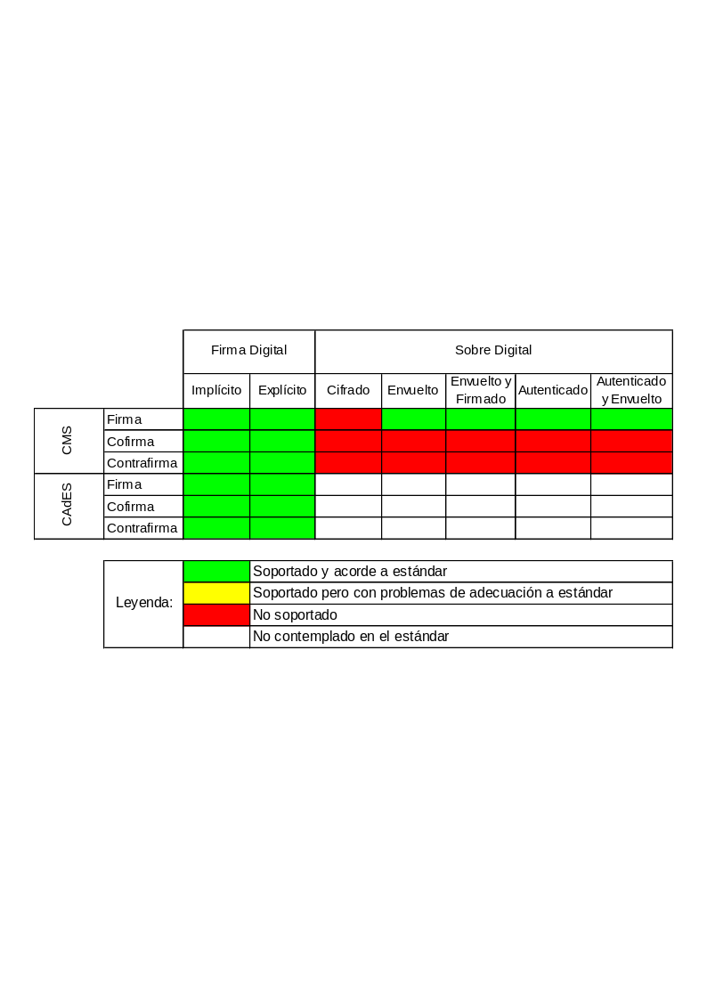
Adicionalmente, deben observarse las siguientes aclaraciones sobre los formatos:
-
Las firmas CMS generadas son compatibles PKCS#7
-
Las firmas CAdES generadas son compatibles con la especificación CAdES-BES o CAdES-EPES.
Algoritmos de huella digital
El cliente de firma soporta (con las salvedades indicadas en las notas posteriores) la aplicación de los siguientes algoritmos de huella digital para las firmas binarias:
-
SHA-1, SHA-256, SHA-384, SHA-512.
Uso de los parámetros de funcionamiento
-
El modo de uso del cliente para establecer los parámetros de funcionamiento del Cliente consiste en realizar llamadas a ciertos métodos del Applet indicando cadenas de texto que identifican los valores que queremos establecer.
En particular, se indican los formatos y sub-formatos (modos) de firma mediante unas cadenas de texto específicas. Además, cada formato o sub-formato introducido va asociado a una extensión de fichero (que define su tipo), extensiones que se usan como filtro de entrada o de salida a la hora de abrir o salvar archivos.
Las cadenas de identificación de formato deben usarse con la llamada JavaScript:
clienteFirma.setSignatureFormat(String format)
Y las cadenas de sub-formato con la llamada JavaScript:
clienteFirma.setSignatureMode(String mode)
Ambas funciones están documentadas en el JavaDoc del Applet, Remítase a estos documentos para más información. El orden de llamada de ambos métodos no es significativo.
Parámetros de funcionamiento
- Cadenas (se ignoran las diferencias entre mayúsculas y minúsculas) de identificación de formato (varias alternativas por cada uno de ellos, por flexibilidad de uso, se muestran separadas por “/”).
- CMS
- "CMS" / "PKCS7" / "PKCS#7"
- CAdES
- "CAdES" / "CAdES-BES"
-
Cadenas de identificación del modo de firma (insensibles a mayúsculas/minúsculas).
-
Firma Explícita
- "Explicit"
-
Firma Implícita
- "Implicit"
-
-
Ficheros de entrada (todos: CMS y CAdES, Implícitas y Explícitas)
- Binarios (*.*)
-
Ficheros de salida
-
CMS y CAdES
-
Ficheros de firma ASN.1 (*.csig)
Cofirmas cruzadas entre CMS y CAdES
-
-
Las cofirmas de un documento dan como resultado dos firmas sobre este mismo documento que se encuentran a un mismo nivel, es decir, que ninguna envuelve a la otra ni una prevalece sobre la otra.
A nivel de formato interno, esto quiere decir que cuando cofirmamos un documento ya firmado previamente, esta firma previa no se modifica. Si tenemos en cuenta que CAdES es en realidad un subconjunto de CMS, el resultado de una cofirma CAdES sobre un documento firmado previamente con CMS (o viceversa), son dos firmas independientes, una en CAdES y otra en CMS. Dado que todas las firmas CAdES son CMS pero no todas las firmas CMS son CAdES, el resultado global de la firma se adecúa al estándar más amplio, CMS en este caso.
Otro efecto de compatibilidad de formatos de las cofirmas con varios formatos de un único documento es la ruptura de la compatibilidad con PKCS#7, ya que, aunque las firmas generadas por el cliente mediante CMS son compatibles con PKCS#7, las generadas con CAdES no lo son, por lo que, en el momento que se introduzca una estructura CAdES, se perderá la compatibilidad PKCS#7 en el global de la firma.
Formato CMS de Firma Digital
Al igual que otros elementos CMS que describiremos posteriormente, la estructura de una firma CMS viene definida en la RFC 3852, aunque en este caso en especial, y para mantener la compatibilidad con PKCS#7, el elemento signedData especificado en la RFC indicada se encuentra limitado. La estructura empleada por el cliente de firma es la siguiente:
- Figura 10: Estructura PKCS#7 SignedData
-
CMS Version. Indica las diferentes versiones del mensaje. Para que la compatibilidad con PKCS#7 se mantenga debe ser 0.
-
Digest Algorithm Identifier. Identifica el algoritmo utilizado.
-
ContentInfo. Secuencia de parámetros que identifican el contenido del mensaje. Comprende el tipo de contenido (contentType) que en nuestro caso será Data y content que se refiere a la secuencia de bytes correspondiente a los datos mismos.
-
Extended Certificates And Certificates. Opcional. Permite especificar una cadena de certificados para la validación de los distintos certificados firmantes.
-
Certificate revocation Lists. Opcional. Permite especificar las CRL para los certificados utilizados.
-
Signer Info. Estructura que especifica la información de los diferentes firmantes del contenido del mensaje. Se subdividen en los siguientes campos:
-
Versión. Especifica la versión de esta estructura y será siempre 1 para PKCS#7.
-
Issuer And Serial Number. Especifica el certificado usado mediante el emisor y número de serie de éste.
-
Digest Algorithm Identifier. Identifica el algoritmo utilizado.
-
Authenticated Attributes. Opcional. Secuencia de atributos firmados que especifican ciertos parámetros importantes para la interpretación del contenido. Si el tipo del contenido fuese distinto de Data, sería obligatorio incorporar como atributos el tipo empleado y el hash del contenido, pero en nuestro caso esto no es posible ya que siempre tendremos el ContentType Data.
-
Digest Encryption Algorithm. Describe que algoritmo se ha usado en la encriptación de la firma y resumen del documento.
-
Encrypted Digest. Hash del mensaje encriptado empleando la clave privada del certificado y el algoritmo especificado antes
-
Unauthenticated Attributes. Opcional. Atributos no firmados definidos en PKCS#9, como por ejemplo las contrafirmas.
Formato de sobre digital CMS encriptado
-
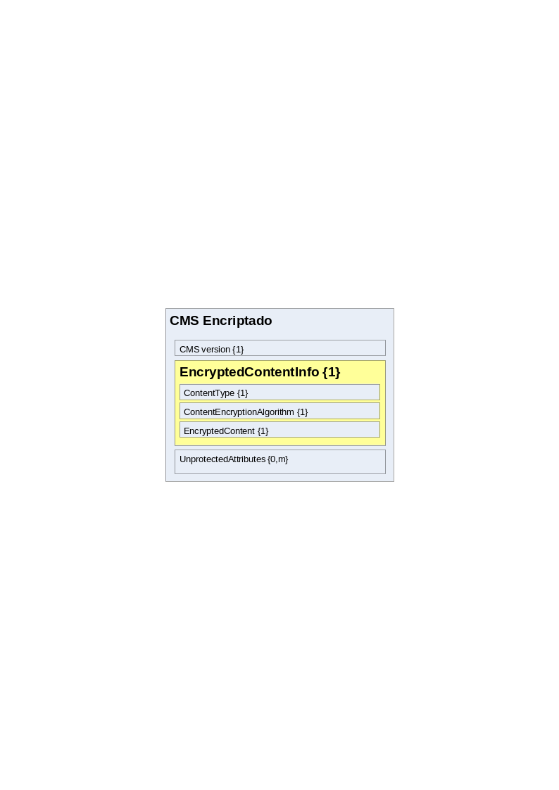La estructura vendría definida como sigue:
- Figura 16: Estructura PKCS#7 EncryptedData
-
CMS Version. Será 0 si no existen UnprotectedAtributes o 2 en caso contrario.
-
Encrypted Content Info. Subestructura que se define mediante los siguientes campos:
-
Content Type. Define el tipo de contenido.
-
Content Encryption Algorithm. Define el algoritmo utilizado para encriptar el contenido.
-
Encrypted Content. Contenido encriptado usando el algoritmo especificado anteriormente.
-
-
Unprotected Attributes. Opcional. Secuencia de parámetros auxiliares definidos por otros estándares.
Como se puede apreciar, esta estructura no contiene la clave de cifrado ni ningún método de transmisión de esta, por lo que si se usa como mensaje se debe buscar un método para compartir una clave privada.
Formato de Sobre Digital CMS Envuelto
Esta estructura se identifica con el sobre digital identificado en la RFC 3852 como Enveloped CMS y sigue la siguiente estructura:
- Figura 17: Estructura PKCS#7 EnvelopedData
-
CMS Version. Viene determinada en función de los parámetros presentes en la estructura generada. Para que fuese compatible con la estructura especificada en PKCS#7 debería ser 0, pero quitaría mucha de las opciones más importantes que incorpora esta solución.
-
Originator Info. Define el emisor del mensaje. Aunque es opcional, su presencia viene determinada por los algoritmos utilizados internamente.
-
Recipient Info. Define los receptores válidos para el mensaje actual. Por requerimientos de la tecnología utilizada serán de tipo keytransport, ya que necesitamos incorporar la clave simétrica utilizada en el cifrado. Se distinguen los siguientes campos:
-
Version. Puede ser 0 o 2 en función de los datos incluidos en Recipient Identifier. En nuestro caso será 2.
-
Key Encryption Algorithm. Define el algoritmo por el cual se ha encriptado la clave simétrica adjunta. Se utilizan algoritmos asimétricos y en nuestro caso RSA.
-
Encrypted Key. Clave utilizada para encriptar el contenido del mensaje cifrada utilizando el algoritmo anteriormente definido.
-
-
Encrypted Content Info. Estructura igual que la contenida en CMS encriptado:
-
Content Type. Define el tipo de contenido.
-
Content Encryption Algorithm. Define el algoritmo utilizado para encriptar el contenido.
-
Encrypted Content. Contenido encriptado usando el algoritmo especificado especificado.
-
-
Unprotected Attributes. Conjunto de atributos no cifrados definidos o necesarios por otros estándares.
Formato de sobre digital CMS Firmado y envuelto
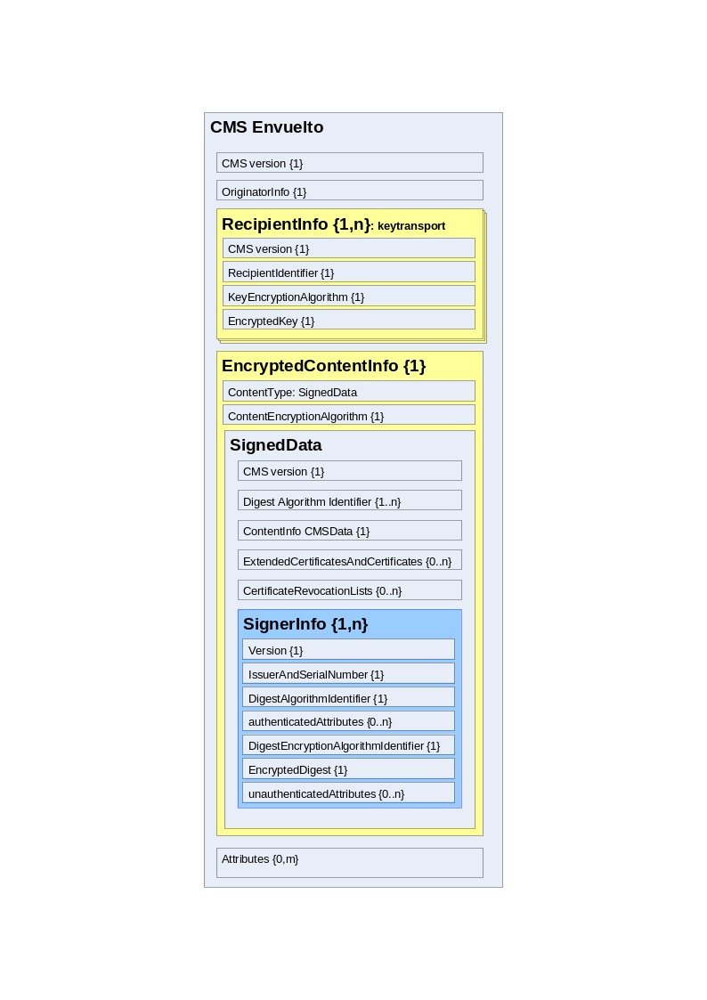
Esta estructura es un atajo para crear un CMS envuelto en cuyo interior se encuentra un mensaje firmado. Esto significa que la única diferencia en cuanto a la estructura es que el conten type de la subestructura Encrypted Content Info sería un Signed Data como el definido en el CMS Firmado.
La diferencia fundamental es que los parámetros a especificar no son tan libres, ya que por ejemplo es obligatorio especificar el emisor, ya que tenemos que firmar el mensaje con su certificado.
Este es un ejemplo de cómo se pueden anidar estructuras CMS. Por ejemplo, podríamos insertar un CMS envuelto en un CMS firmado (obviando la utilidad que pudiese tener o no) simplemente generando el CMS envuelto y especificando el resultado de la salida como datos de entrada para la creación del CMS firmado, y así sucesivamente.
-
Figura 18: Estructura PKCS#7 SignedAndEnvelopedData
Formato de sobre digital CMS Autenticado
Esta estructura se identifica con el sobre digital identificado en la RFC 3852 como Authenticated CMS y sigue la siguiente estructura:
-
<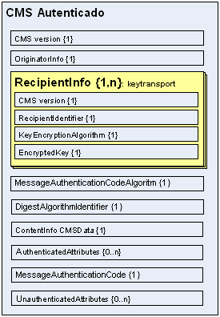
Figura 19: Estructura CMS AuthenticatedData
-
CMS Version. Viene determinada en función de los parámetros presentes en la estructura generada. Para que fuese compatible con la estructura especificada en PKCS#7 debería ser 0, pero quitaría mucha de las opciones más importantes que incorpora esta solución.
-
Originator Info. Define el emisor del mensaje. Aunque es opcional, su presencia viene determinada por los algoritmos utilizados internamente.
-
Recipient Info. Define los receptores válidos para el mensaje actual. Por requerimientos de la tecnología utilizada serán de tipo keytransport, ya que necesitamos incorporar la clave simétrica utilizada en el cifrado. Se distinguen los siguientes campos:
-
Version. Puede ser 0 o 2 en función de los datos incluidos en Recipient Identifier. En nuestro caso será 2.
-
RecipientIdentifier: Identifica al usuario al que va dirigido el sobre.
-
Key Encryption Algorithm. Define el algoritmo por el cual se ha encriptado la clave simétrica adjunta. Se utilizan algoritmos asimétricos y en nuestro caso RSA.
-
Encrypted Key. Clave utilizada para encriptar el contenido del mensaje cifrada utilizando el algoritmo anteriormente definido.
-
-
MessageAuthenticationCodeAlgorithm: Define el algoritmo con el que se creará la MAC.
-
DigestAlgorithmIdentifier: Identifica el algoritmo utilizado.
-
ContentInfo: Secuencia de parámetros que identifican el contenido del mensaje. Comprende el tipo de contenido (contentType) que en nuestro caso será Data y content que se refiere a la secuencia de bytes correspondiente a los datos mismos.
-
AuthenticatedAtributes: Opcional. Secuencia de atributos firmados que especifican ciertos parámetros importantes para la interpretación del contenido. Si el tipo del contenido fuese distinto de Data, sería obligatorio incorporar como atributos el tipo empleado y el hash del contenido, pero en nuestro caso esto no es posible ya que siempre tendremos el ContentType Data.
-
MessageAuthenticationCode: Código que autentifica el mensaje.
-
Unauthenticated Attributes. Opcional. Atributos no firmados definidos en PKCS#9, como por ejemplo las contrafirmas.
Anexo B. Configuración específica para el formato CAdES
El Cliente de firma genera firmas CAdES compatibles por estructura y atributos tanto con la versión 1.7.3 como con la 1.8.1, pero en ambas versiones, el atributo Signing Certificate se puede generar de dos formas distintas, la V1 y la V2.
Por defecto, y para una mayor compatibilidad, este atributo se genera de la forma V1 cuando la firma se genera con un algoritmo de firma cuya operación de huella digital es SHA1 y con la forma V2 cuando se usa cualquier otro algoritmo.
Este comportamiento se puede variar indicando explícitamente si deseamos usar o no la versión 2 del atributo. Esto se hará mediante el método del Applet (que es posible invocar vía JavaScript): clienteFirma.addExtraParam(String paramName, String paramValue), y el siguiente uso:
clienteFirma.addExtraParam(“signingCertificateV2”, “true”);
Desde la invocación de este método todas las firmas CAdES que se realicen hasta el reinicio del Applet tendrán la forma V2 del atributo Signing Certificate. Si queremos restablecer el comportamiento normal de generación en la forma V1 debemos invocar el paso de parámetro adicional de este otra forma:
clienteFirma.addExtraParam(“signingCertificateV2”, “false”);
Para las firmas en CAdES que van a sufrir un tratamiento posterior acorde a la versión CAdES 1.8.1 (como por ejemplo sellos de tiempo complejos), se recomienda usar siempre la forma V2 del atributo Signing Certificate.
Creative Commons
Reconocimiento-NoComercial-CompartirIgual 3.0 Unported
Usted es libre de:
| < style="width:0.52083in;height:0.52083in" alt="share" /> | Compartir - copiar, distribuir, ejecutar y comunicar públicamente la obra |
|-----------|-------------------------------------------------------------|
| <
style="width:0.52083in;height:0.52083in" alt="share" /> | Compartir - copiar, distribuir, ejecutar y comunicar públicamente la obra |
|-----------|-------------------------------------------------------------|
| < style="width:0.52083in;height:0.52083in" alt="remix" /> | hacer obras derivadas |
style="width:0.52083in;height:0.52083in" alt="remix" /> | hacer obras derivadas |
Bajo las condiciones siguientes:
| < style="width:0.52083in;height:0.52083in" alt="by" /> | Atribución — Debe reconocer los créditos de la obra de la manera especificada por el autor o el licenciante (pero no de una manera que sugiera que tiene su apoyo o que apoyan el uso que hace de su obra). |
|-----------|-------------------------------------------------------------|
| <
style="width:0.52083in;height:0.52083in" alt="by" /> | Atribución — Debe reconocer los créditos de la obra de la manera especificada por el autor o el licenciante (pero no de una manera que sugiera que tiene su apoyo o que apoyan el uso que hace de su obra). |
|-----------|-------------------------------------------------------------|
| < style="width:0.52083in;height:0.52083in" alt="nc" /> | NoComercial — No puede utilizar esta obra para fines comerciales. |
| <
style="width:0.52083in;height:0.52083in" alt="nc" /> | NoComercial — No puede utilizar esta obra para fines comerciales. |
| < style="width:0.52083in;height:0.52083in" alt="sa" /> | Compartir bajo la Misma Licencia — Si altera o transforma esta obra, o genera una obra derivada, sólo puede distribuir la obra generada bajo una licencia idéntica a ésta. |
style="width:0.52083in;height:0.52083in" alt="sa" /> | Compartir bajo la Misma Licencia — Si altera o transforma esta obra, o genera una obra derivada, sólo puede distribuir la obra generada bajo una licencia idéntica a ésta. |
Entendiendo que:
Renuncia — Alguna de estas condiciones puede no aplicarse si se obtiene el permiso del titular de los derechos de autor
Dominio Público — Cuando la obra o alguno de sus elementos se hallen en el dominio público según la ley vigente aplicable, esta situación no quedará afectada por la licencia.
Otros derechos — Los derechos siguientes no quedan afectados por la licencia de ninguna manera:
-
Los derechos derivados de usos legítimos u otras limitaciones reconocidas por ley no se ven afectados por lo anterior.
-
Los derechos morales del auto;
-
Derechos que pueden ostentar otras personas sobre la propia obra o su uso, como por ejemplo derechos de imagen o de privacidad.
Aviso — Al reutilizar o distribuir la obra, tiene que dejar muy en claro los términos de la licencia de esta obra. La mejor forma de hacerlo es enlazar a esta página.
Licencia
LA OBRA O LA PRESTACIÓN (SEGÚN SE DEFINEN MÁS ADELANTE) SE PROPORCIONA BAJO LOS TÉRMINOS DE ESTA LICENCIA PÚBLICA DE CREATIVE COMMONS (CCPL O LICENCIA). LA OBRA O LA PRESTACIÓN SE ENCUENTRA PROTEGIDA POR LA LEY ESPAÑOLA DE PROPIEDAD INTELECTUAL Y/O CUALESQUIERA OTRAS NORMAS QUE RESULTEN DE APLICACIÓN. QUEDA PROHIBIDO CUALQUIER USO DE LA OBRA O PRESTACIÓN DIFERENTE A LO AUTORIZADO BAJO ESTA LICENCIA O LO DISPUESTO EN LA LEY DE PROPIEDAD INTELECTUAL.
MEDIANTE EL EJERCICIO DE CUALQUIER DERECHO SOBRE LA OBRA O LA PRESTACIÓN, USTED ACEPTA Y CONSIENTE LAS LIMITACIONES Y OBLIGACIONES DE ESTA LICENCIA, SIN PERJUICIO DE LA NECESIDAD DE CONSENTIMIENTO EXPRESO EN CASO DE VIOLACIÓN PREVIA DE LOS TÉRMINOS DE LA MISMA. EL LICENCIADOR LE CONCEDE LOS DERECHOS CONTENIDOS EN ESTA LICENCIA, SIEMPRE QUE USTED ACEPTE LOS PRESENTES TÉRMINOS Y CONDICIONES.
1. Definiciones
- La obra es la creación literaria, artística o científica ofrecida bajo los términos de esta licencia.
-
En esta licencia se considera una prestación cualquier interpretación, ejecución, fonograma, grabación audiovisual, emisión o transmisión, mera fotografía u otros objetos protegidos por la legislación de propiedad intelectual vigente aplicable.
-
La aplicación de esta licencia a una colección (definida más adelante) afectará únicamente a su estructura en cuanto forma de expresión de la selección o disposición de sus contenidos, no siendo extensiva a éstos. En este caso la colección tendrá la consideración de obra a efectos de esta licencia.
-
El titular originario es:
-
En el caso de una obra literaria, artística o científica, la persona natural o grupo de personas que creó la obra.
-
En el caso de una obra colectiva, la persona que la edite y divulgue bajo su nombre, salvo pacto contrario.
-
En el caso de una interpretación o ejecución, el actor, cantante, músico, o cualquier otra persona que represente, cante, lea, recite, interprete o ejecute en cualquier forma una obra.
-
En el caso de un fonograma, el productor fonográfico, es decir, la persona natural o jurídica bajo cuya iniciativa y responsabilidad se realiza por primera vez una fijación exclusivamente sonora de la ejecución de una obra o de otros sonidos.
-
En el caso de una grabación audiovisual, el productor de la grabación, es decir, la persona natural o jurídica que tenga la iniciativa y asuma la responsabilidad de las fijaciones de un plano o secuencia de imágenes, con o sin sonido.
-
En el caso de una emisión o una transmisión, la entidad de radiodifusión.
-
En el caso de una mera fotografía, aquella persona que la haya realizado.
-
En el caso de otros objetos protegidos por la legislación de propiedad intelectual vigente, la persona que ésta señale.
-
Se considerarán obras derivadas aquellas obras creadas a partir de la licenciada, como por ejemplo: las traducciones y adaptaciones; las revisiones, actualizaciones y anotaciones; los compendios, resúmenes y extractos; los arreglos musicales y, en general, cualesquiera transformaciones de una obra literaria, artística o científica. Para evitar la duda, si la obra consiste en una composición musical o grabación de sonidos, la sincronización temporal de la obra con una imagen en movimiento (synching) será considerada como una obra derivada a efectos de esta licencia.
-
Tendrán la consideración de colecciones la recopilación de obras ajenas, de datos o de otros elementos independientes como las antologías y las bases de datos que por la selección o disposición de sus contenidos constituyan creaciones intelectuales. La mera incorporación de una obra en una colección no dará lugar a una derivada a efectos de esta licencia.
-
El licenciador es la persona o la entidad que ofrece la obra o prestación bajo los términos de esta licencia y le concede los derechos de explotación de la misma conforme a lo dispuesto en ella.
-
Usted es la persona o la entidad que ejercita los derechos concedidos mediante esta licencia y que no ha violado previamente los términos de la misma con respecto a la obra o la prestación, o que ha recibido el permiso expreso del licenciador de ejercitar los derechos concedidos mediante esta licencia a pesar de una violación anterior.
-
La transformación de una obra comprende su traducción, adaptación y cualquier otra modificación en su forma de la que se derive una obra diferente. La creación resultante de la transformación de una obra tendrá la consideración de obra derivada.
-
Se entiende por reproducción la fijación directa o indirecta, provisional o permanente, por cualquier medio y en cualquier forma, de toda la obra o la prestación o de parte de ella, que permita su comunicación o la obtención de copias.
-
Se entiende por distribución la puesta a disposición del público del original o de las copias de la obra o la prestación, en un soporte tangible, mediante su venta, alquiler, préstamo o de cualquier otra forma.
-
Se entiende por comunicación pública todo acto por el cual una pluralidad de personas, que no pertenezcan al ámbito doméstico de quien la lleva a cabo, pueda tener acceso a la obra o la prestación sin previa distribución de ejemplares a cada una de ellas. Se considera comunicación pública la puesta a disposición del público de obras o prestaciones por procedimientos alámbricos o inalámbricos, de tal forma que cualquier persona pueda acceder a ellas desde el lugar y en el momento que elija.
-
La explotación de la obra o la prestación comprende la reproducción, la distribución, la comunicación pública y, en su caso, la transformación.
2. Límites de los derechos. Nada en esta licencia pretende reducir o restringir cualesquiera límites legales de los derechos exclusivos del titular de los derechos de propiedad intelectual de acuerdo con la Ley de propiedad intelectual o cualesquiera otras leyes aplicables, ya sean derivados de usos legítimos, tales como la copia privada o la cita, u otras limitaciones como la resultante de la primera venta de ejemplares (agotamiento).
3. Concesión de licencia. Conforme a los términos y a las condiciones de esta licencia, el licenciador concede, por el plazo de protección de los derechos de propiedad intelectual y a título gratuito, una licencia de ámbito mundial no exclusiva que incluye los derechos siguientes:
- Derecho de reproducción, distribución y comunicación pública de la obra o la prestación.
-
Derecho a incorporar la obra o la prestación en una o más colecciones.
-
Derecho de reproducción, distribución y comunicación pública de la obra o la prestación lícitamente incorporada en una colección.
-
Derecho de transformación de la obra para crear una obra derivada siempre y cuando se incluya en ésta una indicación de la transformación o modificación efectuada.
-
Derecho de reproducción, distribución y comunicación pública de obras derivadas creadas a partir de la obra licenciada.
-
Derecho a extraer y reutilizar la obra o la prestación de una base de datos.
-
Para evitar cualquier duda, el titular originario:
-
Conserva el derecho a percibir las remuneraciones o compensaciones previstas por actos de explotación de la obra o prestación, calificadas por la ley como irrenunciables e inalienables y sujetas a gestión colectiva obligatoria.
-
Renuncia al derecho exclusivo a percibir, tanto individualmente como mediante una entidad de gestión colectiva de derechos, cualquier remuneración derivada de actos de explotación de la obra o prestación que usted realice.
Estos derechos se pueden ejercitar en todos los medios y formatos, tangibles o intangibles, conocidos en el momento de la concesión de esta licencia. Los derechos mencionados incluyen el derecho a efectuar las modificaciones que sean precisas técnicamente para el ejercicio de los derechos en otros medios y formatos. Todos los derechos no concedidos expresamente por el licenciador quedan reservados, incluyendo, a título enunciativo pero no limitativo, los derechos morales irrenunciables reconocidos por la ley aplicable. En la medida en que el licenciador ostente derechos exclusivos previstos por la ley nacional vigente que implementa la directiva europea en materia de derecho sui generis sobre bases de datos, renuncia expresamente a dichos derechos exclusivos.
4. Restricciones. La concesión de derechos que supone esta licencia se encuentra sujeta y limitada a las restricciones siguientes:
- Usted puede reproducir, distribuir o comunicar públicamente la obra o prestación solamente bajo los términos de esta licencia y debe incluir una copia de la misma, o su Identificador Uniforme de Recurso (URI). Usted no puede ofrecer o imponer ninguna condición sobre la obra o prestación que altere o restrinja los términos de esta licencia o el ejercicio de sus derechos por parte de los concesionarios de la misma. Usted no puede sublicenciar la obra o prestación. Usted debe mantener intactos todos los avisos que se refieran a esta licencia y a la ausencia de garantías. Usted no puede reproducir, distribuir o comunicar públicamente la obra o prestación con medidas tecnológicas que controlen el acceso o el uso de una manera contraria a los términos de esta licencia. Esta sección 4.a también afecta a la obra o prestación incorporada en una colección, pero ello no implica que ésta en su conjunto quede automáticamente o deba quedar sujeta a los términos de la misma. En el caso que le sea requerido, previa comunicación del licenciador, si usted incorpora la obra en una colección y/o crea una obra derivada, deberá quitar cualquier crédito requerido en el apartado 4.b, en la medida de lo posible.
- Si usted reproduce, distribuye o comunica públicamente la obra o la prestación, una colección que la incorpore o cualquier obra derivada, debe mantener intactos todos los avisos sobre la propiedad intelectual e indicar, de manera razonable conforme al medio o a los medios que usted esté utilizando:
-
El nombre del autor original, o el seudónimo si es el caso, así como el del titular originario, si le es facilitado.
-
El nombre de aquellas partes (por ejemplo: institución, publicación, revista) que el titular originario y/o el licenciador designen para ser reconocidos en el aviso legal, las condiciones de uso, o de cualquier otra manera razonable.
-
El título de la obra o la prestación si le es facilitado.
-
El URI, si existe, que el licenciador especifique para ser vinculado a la obra o la prestación, a menos que tal URI no se refiera al aviso legal o a la información sobre la licencia de la obra o la prestación.
-
En el caso de una obra derivada, un aviso que identifique la transformación de la obra en la obra derivada (p. ej., "traducción castellana de la obra de Autor Original," o "guión basado en obra original de Autor Original").
Este reconocimiento debe hacerse de manera razonable. En el caso de una obra derivada o incorporación en una colección estos créditos deberán aparecer como mínimo en el mismo lugar donde se hallen los correspondientes a otros autores o titulares y de forma comparable a los mismos. Para evitar la duda, los créditos requeridos en esta sección sólo serán utilizados a efectos de atribución de la obra o la prestación en la manera especificada anteriormente. Sin un permiso previo por escrito, usted no puede afirmar ni dar a entender implícitamente ni explícitamente ninguna conexión, patrocinio o aprobación por parte del titular originario, el licenciador y/o las partes reconocidas hacia usted o hacia el uso que hace de la obra o la prestación.
- Para evitar cualquier duda, debe hacerse notar que las restricciones anteriores (párrafos 4.a y 4.b) no son de aplicación a aquellas partes de la obra o la prestación objeto de esta licencia que únicamente puedan ser protegidas mediante el derecho sui generis sobre bases de datos recogido por la ley nacional vigente implementando la directiva europea de bases de datos
5. Exoneración de responsabilidad
A MENOS QUE SE ACUERDE MUTUAMENTE ENTRE LAS PARTES, EL LICENCIADOR OFRECE LA OBRA O LA PRESTACIÓN TAL CUAL (ON AN "AS-IS" BASIS) Y NO CONFIERE NINGUNA GARANTÍA DE CUALQUIER TIPO RESPECTO DE LA OBRA O LA PRESTACIÓN O DE LA PRESENCIA O AUSENCIA DE ERRORES QUE PUEDAN O NO SER DESCUBIERTOS. ALGUNAS JURISDICCIONES NO PERMITEN LA EXCLUSIÓN DE TALES GARANTÍAS, POR LO QUE TAL EXCLUSIÓN PUEDE NO SER DE APLICACIÓN A USTED.
6. Limitación de responsabilidad. SALVO QUE LO DISPONGA EXPRESA E IMPERATIVAMENTE LA LEY APLICABLE, EN NINGÚN CASO EL LICENCIADOR SERÁ RESPONSABLE ANTE USTED POR CUALESQUIERA DAÑOS RESULTANTES, GENERALES O ESPECIALES (INCLUIDO EL DAÑO EMERGENTE Y EL LUCRO CESANTE), FORTUITOS O CAUSALES, DIRECTOS O INDIRECTOS, PRODUCIDOS EN CONEXIÓN CON ESTA LICENCIA O EL USO DE LA OBRA O LA PRESTACIÓN, INCLUSO SI EL LICENCIADOR HUBIERA SIDO INFORMADO DE LA POSIBILIDAD DE TALES DAÑOS.
7. Finalización de la licencia
- Esta licencia y la concesión de los derechos que contiene terminarán automáticamente en caso de cualquier incumplimiento de los términos de la misma. Las personas o entidades que hayan recibido de usted obras derivadas o colecciones bajo esta licencia, sin embargo, no verán sus licencias finalizadas, siempre que tales personas o entidades se mantengan en el cumplimiento íntegro de esta licencia. Las secciones 1, 2, 5, 6, 7 y 8 permanecerán vigentes pese a cualquier finalización de esta licencia.
- Conforme a las condiciones y términos anteriores, la concesión de derechos de esta licencia es vigente por todo el plazo de protección de los derechos de propiedad intelectual según la ley aplicable. A pesar de lo anterior, el licenciador se reserva el derecho a divulgar o publicar la obra o la prestación en condiciones distintas a las presentes, o de retirar la obra o la prestación en cualquier momento. No obstante, ello no supondrá dar por concluida esta licencia (o cualquier otra licencia que haya sido concedida, o sea necesario ser concedida, bajo los términos de esta licencia), que continuará vigente y con efectos completos a no ser que haya finalizado conforme a lo establecido anteriormente, sin perjuicio del derecho moral de arrepentimiento en los términos reconocidos por la ley de propiedad intelectual aplicable.
8. Miscelánea
- Cada vez que usted realice cualquier tipo de explotación de la obra o la prestación, o de una colección que la incorpore, el licenciador ofrece a los terceros y sucesivos licenciatarios la concesión de derechos sobre la obra o la prestación en las mismas condiciones y términos que la licencia concedida a usted.
-
Cada vez que usted realice cualquier tipo de explotación de una obra derivada, el licenciador ofrece a los terceros y sucesivos licenciatarios la concesión de derechos sobre la obra objeto de esta licencia en las mismas condiciones y términos que la licencia concedida a usted.
-
Si alguna disposición de esta licencia resulta inválida o inaplicable según la Ley vigente, ello no afectará la validez o aplicabilidad del resto de los términos de esta licencia y, sin ninguna acción adicional por cualquiera las partes de este acuerdo, tal disposición se entenderá reformada en lo estrictamente necesario para hacer que tal disposición sea válida y ejecutiva.
-
No se entenderá que existe renuncia respecto de algún término o disposición de esta licencia, ni que se consiente violación alguna de la misma, a menos que tal renuncia o consentimiento figure por escrito y lleve la firma de la parte que renuncie o consienta.
-
Esta licencia constituye el acuerdo pleno entre las partes con respecto a la obra o la prestación objeto de la licencia. No caben interpretaciones, acuerdos o condiciones con respecto a la obra o la prestación que no se encuentren expresamente especificados en la presente licencia. El licenciador no estará obligado por ninguna disposición complementaria que pueda aparecer en cualquier comunicación que le haga llegar usted. Esta licencia no se puede modificar sin el mutuo acuerdo por escrito entre el licenciador y usted.